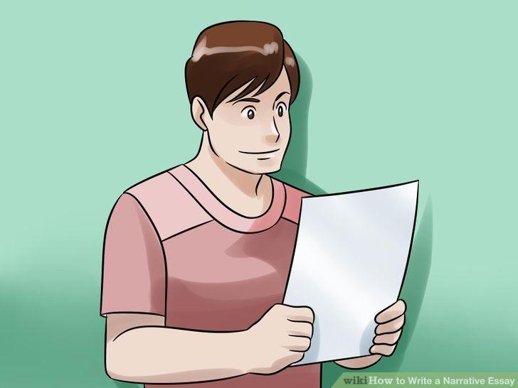
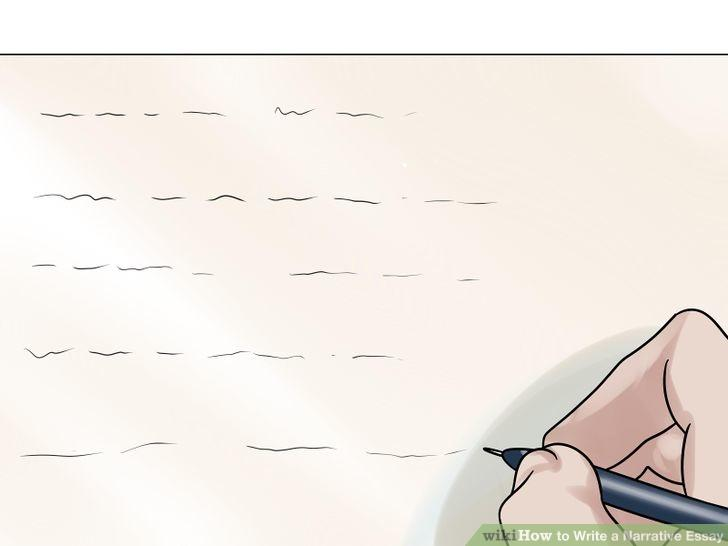

SECOND YEAR
LANGUAGE L-3
Malla curricular de Comunicación y
Lenguaje L 3 Inglés - Segundo Grado
|
Competencia
|
Indicador de logro
|
Contenidos declarativos
|
Contenidos procedimentales
|
Contenidos actitudinales
|
|
1. Engages in conversations to exchange information and give
opinions in the environment where he/she interacts. (His/ her
school and community).
|
1.1 Interacts with classmates and teachers.
|
Elements of communication:
|
Interactive activities to exchange
information and opinions.
Asking questions and giving answers about personal interests
and feelings.
|
Expressing agreement or disagreement in a given situation.
|
|
1.2 Expresses his/her opinion about different topics.
|
Short and long answers. Organizing ideas and information.
|
Role playing and group interaction.
|
Showing respect for others’ opinions.
|
|
1.3 Participates in simple dialogues about family, school and
community environments.
|
Skills for listening and speaking: Dialogues Conversations
Interviews reports.
|
Using skills for listening and speaking with classmates,
teachers and community members who speak English.
|
Showing politeness during conversation.
|
|
Competencia
|
Indicador de logro
|
Contenidos declarativos
|
Contenidos procedimentales
|
Contenidos actitudinales
|
|
2. Narrates in a written form: personal, school or social
experiences with appropriate grammatical structure based on
reading newspapers or magazine texts.
|
2.1 Writes sentences and paragraphs with a coherent structure
According to a purpose.
|
Sentence base to form complete sentences. Paragraph
organization: unity, coherence, and development.
|
Developing a narration by delimiting the topic, organizing the
ideas, and writing sentences and paragraphs on topics chosen from
newspapers or magazines.
|
Maintaining a positive attitude toward writing.
|
|
2.2. Writes information accurately from literary and scientific
texts adequate to an intermediate level of reading comprehension
|
Sentence: declarative, interrogative, imperative, exclamatory.
|
Top-down reading. Bottom-up reading.
Interpreting analogies and comparisons.
Identification of values, positive and negative attitudes in
characters of literary texts.
|
Valuing characters’ positive actions.
|
|
Competencia
|
Indicador de logro
|
Contenidos declarativos
|
Contenidos procedimentales
|
Contenidos actitudinales
|
|
3. Uses cognitive and metacognitive strategies to understand
new vocabulary.
|
3.1 Uses synonyms, antonyms and homophones with precision and
creativity in his/her oral and written communications.
|
Synonyms, antonyms and homophones.
Morphological norms for generating words: nouns, verbs,
adjectives, adverbs.
|
Applying synonyms, antonyms and
homophones in enriched oral or written descriptions.
Identification of morphological norms for generating words
(nouns, verbs, adjectives).
|
Participating spontaneously.
|
|
3.2. Interprets literal and figurative meaning of words and
metaphors in oral presentations and written texts.
|
Numbers 1000 to 100,000. Vocabulary related to health,
occupation, work, commerce and vacation; agriculture, industry,
services; communication technology; workshops, workplaces; travel
and transportation services.
|
Applying new vocabulary in oral and
written communication.
Increasing vocabulary by means of semantic domains.
Transforming literal into figurative meaning in brief texts.
|
|
Competencia
|
Indicador de logro
|
Contenidos declarativos
|
Contenidos procedimentales
|
Contenidos actitudinales
|
|
4. Compares cultural practices of English-speaking countries
with those of his/her country.
|
4.1 Identifies cultural differences related to commerce,
tourism, arts and sports between English-speaking countries and
Guatemala.
|
Brief history of England and the
USA.
Commerce and tourism. Arts and sports.
|
Analyzing historical differences
between English speaking countries (e.g., England, USA and
Caribbean islands) and Guatemala.
Identification of commercial, touristy, artistic and sports
relationships between English-speaking countries and Guatemala.
|
Respecting cultural differences among people, regions and
countries.
|
YEAR 2
LANGUAGE L-3
CHAPTER 1
Basic elements of
communication:
Communication is a process
of passing information and understanding from one person to another.
1. Basic Elements of
Communication
2. Communication
CommunicationCommunication The sharing of information between two or
more individuals or groups to reach a common understanding. An
important aspect of behavior means speaking or writing or sending a
message to another person ensuring that it has reached the target
audience and able to understand, interpret and respond to the
message received.
3. Role
of Communication in Business Role of Communication in Business
Strengthen a mutual sense of commitment Helps to bridge the gap
between people who have misunderstanding Plays a critical role in
all phases of interpersonal relations Holds an organization together
4. Role
of Communication in Business Role of Communication in Business It is
the tool that brings about changes in the attitudes and views of our
associates, motivate them and establish and maintain relations with
them.
5. Business
Communication Business Communication Letters, reports, memos,
notices, interviews, meetings, conferences, presentations,
negotiations, company meeting are the examples of business
communication.
6. Attributes
of Communication Attributes of Communication. Communication is
unintentional as well as intentional It is a dynamic process It is
systemic It is both interaction and transaction
7. “
Communication is a process of passing information and understanding
from one person to another.” Keith Davis “Communication is any
behavior that results in an exchange of meaning.” The American
Management Association
8. “Communication
is the process by which information is passed between individuals
and/or organizations by means of previously agreed symbols.” Peter
Little 5 Key Terms in the DefinitionSocial, Process, Symbols,
Meaning, & Environment
9. The
Elements or factors involved in the process of communication are:
Source/Sender, Audience/Receiver, Goal/purpose, Message/Content,
Medium/Channel, feedback and Environment/Context Received Idea
Encoding Message Medium Idea Message Decoding Tx Rx (Transmitted)
(Received) One Way Communication Process Feedback Received Idea
Encoding Message Medium Idea Message Decoding Tx Rx (Transmitted)
(Received) Two Way Communication Process
10. Message
conceived 1 Message decoded 4Decision to send message Language is
decoded from as a result of thought knowledge of terms,process or
external stimuli vocabulary, previous information Message encoded 2
Message interpreted 5 Appropriate medium Interpretation
understanding selected: Underlying as well asLetter, e-mail,
interview, explicit meaning Meeting, telephone Medium selected 3
Feedback supplied 6 Appropriated language Signals passed to
sender/oralChosen oral, written word, or written reply/ Picture, or
non-verbal non-verbal signals communication
11. 1.
Intrapersonal Level2. Interpersonal Level3. Level of public
Communication.
ACTIVITIES/HOMEWORK.
This chapter consists of
practices in the classroom.
The
class will be divided by pairs of student. One of the students will
express first an opinion about food, and then discuss it with the
other student. Both of them will engage in a brief interchange
based on their positions in favor or against the opinion.
In
another class time period, the same as above, except that this
time, instead of expressing an opinion about food, it should be a
fact about food.
Keep in mind proper
language, facial expressions and all the proper pronunciations and
the use of an ample vocabulary.
HOMEWORK:
READ EACH OF THE FOLLOWING
STATEMENTS. WRITE Fact OR Opinion ON THE LINES. 1. _________ We need
to eat food in order to survive.
2. _________ Foods with
fat in them are bad.
3. _________ Fruits and
vegetables are an important part of the human diet.
4. _________ Too many fats
can make you sick.
5. _________ A healthy
diet is important for general health.
6. _________ Hot dogs
taste better than hamburgers.
3. In another classroom
activity, each student will expresses his/her opinion about different
topics.
4. In another cssroom
activity, each student will participates in simple dialogues about
family, school and community environments, besides answering simple
questions posed to the student.
CHAPTER 2
HOW TO WRITE
A NARRATIVE ESSAY
The following internet
address give the necessary information on how to write narratives:
http://www.wikihow.com/Write-a-Narrative-Essay
The following article is
copied from the above mentioned internet address.
How
to Write a Narrative Essay:
Narrative essays are
commonly assigned pieces of writing at different stages through
school. Typically, assignments involve telling a story from your own
life that connects with class themes. It can be a fun type of
assignment to write, if you approach it properly. Learn how to choose
a good topic, get a solid rough draft on paper, and revise your
narrative essay.
Part
1
Choosing a Good Top
Choose a story that
illustrates some topic or theme. Generally, narrative essays involve
two main components: a story and some analysis of that story. A
narrative essay may be "about" a particular issue, theme,
or concept, but it uses a personal story to illustrate that idea.
Most of the time,
narrative essays will involve no outside research or references.
Instead, you'll be using your personal story to provide the evidence
of some point that you're trying to make.[1]
Narrative essays are a
common school assignment used to test your creative story-telling
skills, as well as your ability to connect some element of your
personal life to a topic you might be discussing in class.
Write a Narrative Essay Step 2"
Make sure your story fits
the prompt. Often, narrative essays are school assignments and
they're written based on a prompt you'll receive from your teacher.
Even if you've got a crazy story about the time you escaped from a
deserted island on a hot air balloon, read the prompt closely to make
sure your story fits the assignment. Common topics for narrative
essays include but are not limited to a description of some moment
that:
You experienced adversity
and had to overcome
You failed and had to deal
with the consequences of that failure
Your personality or
character was transformed
You experienced
discrimination or experienced privilege
Write a Narrative Essay Step 3" 3
Choose a story with a
manageable plot. Good narrative essays tell specific stories with
very vibrant and luminous details. You're not writing a novel, so the
story needs to be fairly contained and concise. Try to limit it as
much as possible in terms of other characters, setting, and plot. A
specific family vacation or weekend with a friend? A disaster
holiday, or night out during high school? Perfect.
Bad narrative essays are
generally too broad. "My senior year of high school" or
"This summer" are examples of stories that would be far too
big to tell in the amount of specific detail that a good narrative
essay requires. Pick a single event from the summer, or a single week
of your senior year, not something that takes months to unfold.
It's also good to limit
the number of characters you introduce. Only include other characters
who are absolutely essential. Every single friend from your fifth
grade class will be too many names to keep track of. Pick one.
Write a Narrative Essay Step 4"
Choose a story with
vibrant details. Good narrative essays are full of specific details,
particular images and language that helps make the story come alive
for the reader. The sights and smells in your story should all be
discussed in particular details. When you're thinking of stories that
might make for good essays, it's important to think of some that are
rich in these kinds of details.
Let your imagination fill
in the gaps. When you're describing your grandmother's house and a
specific weekend you remember spending there, it's not important to
remember exactly what was cooked for dinner on Friday night, unless
that's an important part of the story. What did your grandmother
typically cook? What did it usually smell like? Those are the details
we need.
Typically, narrative
essays are "non-fiction," which means that you can't just
make up a story. It needs to have really happened. Force yourself to
stay as true as possible to the straight story.
Part
2
Writing a Draf
Narrative Essay Step 5"
1
Outline the plot before
you begin. Where does your story start? Where does it end? Writing up
a quick list of the major plot points in the story is a good way of
making sure you hit all the high points. Every story needs a
beginning, a middle, and an end.
It helps to limit things
as much as possible. While it might seem like we need to know a bunch
of specific details from your senior year, Try to think of a
particularly tumultuous day from that year and tell us that story.
Where does that story start? Not the first day of school that year.
Find a better starting point.
If you want to tell the
story of your prom night, does it start when you get dressed? Maybe.
Does it start when you spill spaghetti sauce all down your dress
before the dance? While that might seem like the climax of a story
you want to tell, it might make a better starting place. Go straight
to the drama.
You don't need to write up
a formal outline for a narrative essay unless it's part of the
assignment or it really helps you write. Listing the major scenes
that need to be a part of the story will help you get organized and
find a good place to start.
Narrative Essay Step 6"
2
Use a consistent point of
view. Generally, narrative essays will be written in first person,
making use of "I" statements, which is a little unusual
compared to other assignments you'll be given in school. Whether
you're giving us scenes with dialog, or discussing what happened in
past-tense, it's perfectly fine to use first person in a narrative
essay.
Don't switch perspectives
throughout the story. This is a difficult and advanced technique to
Try to pull off, and it usually has the effect of being too
complicated. There should only be one "I" in the story.
In general, narrative
essays (and short stories for that matter) should also be told in
past tense. So, you would write "Johnny and I walked to the
store every Thursday" not "Johnny and I are walking to the
store, like we do every Thursday."
Write-a-Narrative-Essay-Step-7-
3
Describe the important
characters. Who else is important to the story, other than yourself?
Who else was present when the story took place. Who affected the
outcome of the story? What specific, particular details can you
remember about the people in the story? Use these to help build the
characters into real people.
Particular details are
specific and only particular to the character being described. While
it may be specific to say that your friend has brown hair, green
eyes, is 5 feet tall with an athletic build, these things don't tell
us much about the character. The fact that he only wears silk dragon
shirts? Now that gives us something interesting.
Try writing up a brief
sketch of each principal character in your narrative essay, along
with the specific details you remember about them. Pick a few
essentials.
Narrative Essay Step 8" 4
Find the antagonist. Good
narratives often have a protagonist and an antagonist. The
protagonist is usually the main character (in most narrative essays,
that'll be you) who is struggling with something. It might be a
situation, a condition, or a force, but whatever the case, a
protagonist wants something and the reader roots for them. The
antagonist is the thing or person who keeps the protagonist from
getting what they want.
Who or what is the
antagonist in your story? To answer this question, you also need to
find out what the protagonist wants. What is the goal? What's the
best case scenario for the protagonist? What stands in the
protagonist's way?
The antagonist isn't "the
bad guy" of the story, necessarily, and not every story has a
clear antagonist. Also keep in mind that for some good personal
narratives, you might be the antagonist yourself.
Narrative Essay Step 9"
5
Describe the setting. Just
as important to a good story as the characters and the plot is the
setting. Where does the story take place? At home? Outside? In the
city or the country? Describe the location that the story takes place
and let the setting become part of your story.
Do a freewrite about the
location that your story takes place. What do you know about the
place? What can you remember? What can you find out?
If you do any research for
your narrative essay, it will probably be here. Try to find out extra
details about the setting of your story, or double-check your memory
to make sure it's right.
a Narrative Essay Step 10
6
Use vivid details. Good
writing is in the details. Even the most boring office environment or
the most dull town can be made compelling with the right kinds of
details in the writing. Remember to use particulars–unique details
that don't describe anything else but the specific thing you're
writing about, and let these vivid details drive the story.
A popular creative writing
phrase tells writers to "show" not to "tell."
What this means is that you should give us details whenever possible,
rather than telling us facts. You might tell us something like, "My
dad was always sad that year," but if you wrote "Dad never
spoke when he got home from work. We heard his truck, then heard as
he laid his battered hardhat on the kitchen table. Then we heard him
sigh deeply and take off his work clothes, which were stained with
grease."
Part
3
Revising Your Essay

Narrative Essay Step 11"
1
Make sure your theme is
clearly illustrated in the story. After you've written your rough
draft, read back over it with an eye for your theme. Whatever the
purpose of your telling us the story that you're telling us needs to
be made very clear. The last thing you want is for the reader to get
to the end and say, "Good story, but who cares?" Answer the
question before the reader gets the chance to ask.
Get the theme into the
very beginning of the essay. Just as a researched argument essay
needs to have a thesis
statement somewhere in the first
few paragraphs of the essay, a narrative essay needs a topic
statement or a thesis statement to explain the main idea of the
story.
This isn't "ruining
the surprise" of the story, this is foreshadowing the important
themes and details to notice over the course of the story as you tell
it. A good writer doesn't need suspense in a narrative essay. The
ending should seem inevitable.

Narrative Essay Step 12"
2
Use scenes and summaries.
All narratives are made of two kinds of writing: scenes and
summaries. Scenes happen when you need to slow down and tell specific
details about an important moment of the story. Scenes are small
moments that take a while to read. Summary is used to narrate the
time between scenes. They are longer moments that you read over more
quickly.
Scene: "On our walk
to the store, Jared and I stopped at the empty grass lot to talk.
'What's your problem lately?' he asked, his eyes welling with tears.
I didn't know what to tell him. I fidgeted, kicked an empty paint
bucket that was rusted over at the edge of the lot. 'Remember when we
used to play baseball here?' I asked him."
Summary: "We finished
walking to the store and bought all the stuff for the big holiday
dinner. We got a turkey, cornbread, cranberries. The works. The store
was crazy-packed with happy holiday shoppers, but we walked through
them all, not saying a word to each other. It took forever to lug it
all home."
Narrative Essay Step 13"
3
Use
and format dialogue correctly.
When you're writing a narrative essay, it's typically somewhere
between a short story and a regular essay that you might write for
school. You'll have to be familiar with the conventions of formatting
both types of writing, and since most narrative essays will involve
some dialogue, you should make formatting that dialogue correctly a
part of your revision process.
Anything spoken by a
character out loud needs to be included in quotation marks and
attributed to the character speaking it: "I've never been to
Paris," said James.
Each time a new character
speaks, you need to make a new paragraph. If the same character
speaks, multiple instances of dialog can exist in the same paragraph.
<img
Narrative Essay Step 14"
4
Revise
your essay. Revision is the most
important part of writing. Nobody, even the most experienced writers,
get it right on the very first run through. Get a draft finished
ahead of time and give yourself the chance to go back through your
story carefully and see it again. How could it be improved?
Revise for clarity first.
Are your main points clear? If not, make them clear by including more
details or narration in the writing. Hammer home your points.
Was the decision you made
about the starting place of the story correct? Or, now that you've
written, might it be better to start the story later? Ask the tough
questions.
Proofreading
is one part of revision, but it's a very minor part and it should be
done last. Checking punctuation and spelling is the last thing you
should be worried about in your narrative essay.
Sample
Essay
Sample
Narrative Essay
What
are some ways to start a narrative essay?
You could start a
narrative with adjectives describing the setting. For example, "It
was a cold, rainy night." Also, if it's a first person story,
you could start with something the character is thinking, like, "Not
today. This can't be happening."
HOMEWORK:
CHOOSE A TOPIC AND WRITE A
NARRATIVE.
See the following two
videos:https://youtu.be/iWHc5Yar6Ps
and
https://youtu.be/XajMXS2bl3k
CHAPTER 3
Interpreting
analogies and comparisons.
Introducing Analogy and
Comparison / Contrast
The following article is
from
http://notearama.blogspot.com/2013/08/introducing-analogy-and-comparison.html
"Being in love is
like stepping off a cliff and discovering you can fly."
What kind of statement is
that? Do you know?
Did you guess "analogy"?
You're right, it's an analogy, a comparison… it says one thing is
like another thing. They're not exactly the same, but they're alike
in some important, significant, interesting way. If I'm writing an
essay to explain what it's like to be in love, I want to come up with
statements like this one if I possibly can. Do you know why?
Well, one obvious thing is
that I'm trying to describe what I mean by "falling in love."
I may be thinking that my audience doesn't really know what it feels
like, or doesn't know what it feels like to me. So rather than leave
it to chance, I'm trying to paint a really clear picture. Some people
might have the mistaken impression that being in love is a ho-hum
kind of experience, like putting on an old pair of shoes. But that's
not how I see it, so I want to find a way to make readers understand
how I see it, since it's my writing, my paper. I want to find a way
to communicate that exhilaration, that sense of liberation,
excitement, and even empowerment…. And I want to communicate in the
most vivid way possible. I could use all of those abstractions, but
they won't say as much or be as clear in the end as that vivid
analogy.
Another reason might be
that this kind of thing just sounds good-it's colorful and creative;
it might get my readers' attention, make them want to read more.
Maybe the reason is that
I've learned that comparing something new or unfamiliar with
something old and more familiar can help readers grasp obscure,
difficult, or abstract subjects more readily.
If you make these kinds of
statements in your writing, I hope it's because you're learning, or
you've learned that "analogy" is a great rhetorical
technique that works.
Analogy and
comparison/contrast are two rhetorical strategies that are very
closely related to one another—both are immensely useful when
you're writing an analysis, and these notes will address both.
Analogy
So first of all, let's
spell out the definition of analogy, the first technique we're
considering:
An analogy is a comparison
between things which are basically not alike but which share some
kind of striking similarity.
One thing that's great
about using an analogy in your writing is that it can be fun. A well
thought-out analogy can really make your writing stand up and sparkle
that little extra bit. You have to try using them, especially if you
never have before. You just have to get the feel of being a little
(or a lot) creative and see what comes out. Consider a few more
examples:
Learning to drive can be a
marriage of convenience or a red hot love affair.
Some people think it's
just a practical skill, but others are really transformed by the
freedom they feel when they realize they can cover great distances.
More than a few young men have been known to fall in love with their
cars. Maybe a few young ladies, too.
Analyzing an advertisement
can be like reading a poem.
Every detail in an ad has
more than its literal meaning. Images and text are meant to suggest
way more than seem to say on the surface. That's essentially the way
poetry works, using language for connotative power, its ambiguity.
Writing a personal essay
can be like shooting a home movie in your imagination.
As you recall the event,
you get to be the director-you choose the scenes, the sets, the
wardrobe, the characters. You recreate the whole thing so readers can
share in it.
Now it's time for you take
a try at it. Complete the worksheet on using analogies.
Just a few more words
about using analogy, before we move on to our next
topic-comparison/contrast.
Sometimes analogies are
just one-liners and you don't need to say any more. The point is
clear, and you're done. You've said a lot in just a few words. Other
times you may find you want to spend an entire paragraph, or even
several, pursuing an explanation of your analogy because it's so
rich, like a gold mine of meaningful comparisons and contrasts. In
your textbook there's a selection that especially illustrates how an
analogy can extend over several paragraphs. Check out Annie Dillard's
"When You Write" in The Prose Reader. (p. 644, I believe)
Using analogy is a very
natural way to explain something new or difficult to your readers.
When you use analogy, you're building on experience they most likely
already have. And that's the natural way we learn, according to basic
textbook learning theory.
BUT, at some point,
analogies will always "break down." They break down in the
sense that they're not really true. Falling in love isn't really like
stepping off a cliff (it just sometimes feels that way). The feeling
might be similar but in reality is it's not the same. So, it can be
very instructive to explore where exactly your analogy falls
completely apart-in other words, where your two subjects contrast
rather than compare. This is where analogy and comparison/contrast
overlap. Because when you do a longer or "extended analogy"
you are likely to become aware of both similarities and differences
between your two subjects.
Now, I know you read the
chapter I assigned, and I know you're aware that closely related to
analogy is another rhetorical technique—comparison/contrast.
Comparison and Contrast
Comparison and contrast is
what you are doing when you become aware of and begin to formally
note the similarities and differences between things brought together
for examination. When you compare, you find similarities, when you
contrast you find differences. Analogies were mainly for making
comparisons, but comparison/contrast implies that there's some
significance to discovering and understanding both.
Let's use a really simple
example first.
Here's an apple and an
orange—I'm comparing them and they're both round, they both have
skin, and they're both sweet. On the other hand, they're different.
One is red and the other is orange; one is divided into sections and
one is not; one has a hard skin that's not edible and one has a
softer skin that is edible. They are similar and different at the
same time.
Of course, unless you're
looking at something simple like apples and oranges, you won't
discover important similarities and differences unless you look
closely and think hard about your two subjects. Most of the time,
similarities and differences are more subtle, maybe even somewhat
invisible until close inspection, and you'll have to look really,
really closely. And, unlike comparing and contrasting apples and
oranges, there's more of a substantial point to be made, some kind of
conclusion to be drawn, at the end of those observations. If it was
just apples and oranges we were working with all time, we might find
ourselves asking—so, they're similar and different? So what? What
do we learn from that?
So it seems appropriate to
say a few words about why we do comparison and contrast, why it's
such a useful rhetorical strategy to have around. Why it isn't all
just a waste of time, a lot of hot air, like comparing apples and
oranges.
The fact is we use
comparison and contrast for all kinds of profound intellectual
reasons, and for a lot of practical ones, too. It might be that we're
trying to decide in some way between two things, and we're using
comparison and contrast in order to evaluate which one is better, or
more suitable in some sense.
Which college should I go
to? (categories: price, location, curriculum, social life
Which career should I
specialize in? (categories: interests, abilities, job market)
Which one of these sources
would be better for my research paper? (categories: credibility of
information, quality of the publication, author's credentials,
currency…)
Which of these DVD players
should I spend my hard earned paycheck on? (categories: specs,
features, appearance….)
Which candidate should I
vote for in the election? (categories: experience, intelligence,
policies, character)
Well, you get the idea! No
matter what the question is you're trying to answer, if you're doing
comparison/contrast, your process for figuring out the answer is the
same. You probably do it unconsciously. At some point you establish
some clear criteria, some set of questions, or what your textbook
calls "categories" to work from (see above). Then, your
comparison and contrast takes shape as you apply your categories
equally to each of your subjects. How they compare and contrast leads
you to a draw a conclusion that reflects what you've discovered by
your analysis—sometimes your conclusion is an evaluation about
which one rates higher.
Once you've observed the
similarities and differences you find most interesting or revealing,
or instructive, then you can think about how to present your findings
in writing. We'll see that there are two options available, and they
apply to writing paragraphs or to structuring an essay as a whole,
depending on how large of a subject you're working with. The options
are "sequencing" (a report of your observations that
proceeds "point-by-point") and "chunking" (a
report organized into two or more large "blocks" or
"chunks").
Remember, the whole
process started long before you thought of writing. It started with
analysis. With questions and observations. Before you even start to
write, you know three things:
1. Your "categories"
or "criteria" for comparing and contrasting (your criteria,
or the questions you use to focus the way you will look at each
subject).
2. Your specific
observations (the specific answers to the questions you posed).
It isn't that difficult
to demonstrate how analogy can overlap into a full-fledged
comparison/contrast analysis.
A comparison/contrast
analysis involves digging for similarities—that's comparison-and
differences—that's contrast—between your two chosen subjects.
Suppose I want to explain the comparison I came up with for the last
analogy exercise on your worksheet.
Learning to write can be
like learning a musical instrument.
Personally, I find these
two learning situations are analogous ("analogous" is
pronounced with hard g), and I can compare and contrast them at
length (see the sample practice). Are any of your own analogies good
for comparing and contrasting at length?
See this video:
http://www.watchknowlearn.org/Video.aspx?VideoID=5050&CategoryID=2257
In this video, you will
see analogy and also idioms. We will learn more about idioms later
on.
HOMEWORK:
Circle the answers. Use a
dictionary to obtain the meaning of any word that you may not know
it. Earn it. Thi will increase your vocabulary, which is essential
for good communications.
1. Duck is to duckling as
horse is to
A. Fowl B. Foal
C. Horseling D. Neigbour
2. Road is to car as is
to train.
A. Street B. Path C.
Track D. Engine
3. Glass is to window as
is to table.
A. Chair B. Tablecloth
C. Room D. Wood
4. Mother is to daughter
as Grandmother is to .
A. Niece B.
Granddaughter C. Grandson D. Grandfather.
5. Exciting is to boring
as beautiful is to .
A. Ugly B. Interesting
C. Pretty D. Working
6. Typing is to keyboard
as is to piano.
A. Singing B. Melody
C. Learning D. Playing
7. Child is to adult as
is to cat.
A. Meow B. Catty C.
Kitten D. Baby
8. Edit is to tide as
drawer is to .
A. Cabinet B. Reward C.
Storage D. Reduce
9. Knife is to cut as is
to wash.
A. Soap B. Towel
C. Fork D. Clean
10. Difficult is to
difficulty as attentive is to
A. Attend B.
Attest C. Attention D. Attendant
Comparison/contrast transitions sentence writing exercise
similar similarities different differences in contrast both
although unlike while like
Write sentences or pairs of sentences using some of the words above. For example:
difference
One big difference between New York and Miami is the weather.
1.___________________________________________________________________________________________________________________
_____________________________________________________________________________________________________________________
2.___________________________________________________________________________________________________________________
_____________________________________________________________________________________________________________________
3.___________________________________________________________________________________________________________________
_____________________________________________________________________________________________________________________
4.___________________________________________________________________________________________________________________
_____________________________________________________________________________________________________________________
5.___________________________________________________________________________________________________________________
_____________________________________________________________________________________________________________________
6.___________________________________________________________________________________________________________________
_____________________________________________________________________________________________________________________
7.___________________________________________________________________________________________________________________
____________________________________________________________________________________________________________________
CHAPTER 4
Identification of
values, positive and negative attitudes in characters of literary
texts.
Character
What it is
Character is traditionally
viewed as a description of a fictional person. As a construct, it is
made up of verbal or visual statements about what that fictional
person does, says and thinks and what other fictional characters and
the author of the text say about him or her. The reader, listener or
viewer fleshes out these statements to imagine a person-like
character, sufficiently individualised and coherent to establish the
sense of an identity. In this way, representation of a ‘real’
person invites personal identification and judgements about the
character’s morality and value to their society. This kind of
analysis can contribute to shaping one’s own sense of a moral and
ethical self and so becoming a way of enculturation.
Characters may also be
created and/ or read as representations of ideas, of groups of people
or of types that serve a function in a narrative genre. Questions of
characterisation then focus on the ways a character is constructed
both by the responder and the composer and its function in the
text.
Why it is important
Character is an important
concept in narrative as a driver of the action, a function in the
plot, a way of engaging or positioning a reader or as a way of
representing its thematic concerns. The way character is read is an
indication of particular approaches to texts, be it through personal
engagement or critical response.
Students should
understand that characters can represent types of people, ideas and
values.
Keep in mind that.
Characters are constructs
that function differently in different types of texts and media.
They learn that these
character constructs
combine with
constructs of events and settings to create narrative
use resources such as
description, dialogue, monologue
may draw on such
devices as stereotype and generic convention to reflect values.
Characters trigger an
imaginative response through identification.
Characters may
be complex having a
range of characteristics or simple with one salient feature
change as a result of
events or remain unchanging
have individual
characteristics or be based on a stereotype
Characters are represented
in such a way as to have motives for actions.
Characters
may be judged by the
reader, the other character constructs in the text, the narrator or
the ‘author’.
are constructed in a
such a way as to invite an emotional reaction such as
identification, empathy or antipathy.
Characters are composed of
imagined thoughts, words and actions.
Characters
Characters in imaginative
texts are visual, verbal and aural representations of people who
participate in the narrative.
As you can see, the
development of a character or characters in literary works,
let’s the author develop
likes and dislikes for them, giving them positive or negative
characteristics and or values which let the the author to convey his
ideas in a better form and communicate with the readers.
HOMEWORK:
Name a movie which you
have viewed. Name the principal characters and list their values,
positive or negative and whether you like them or not. Also, list the
reasons for your likes or dislikes and what was the message
transmitted by the movie.
Types of sentence:
declarative, interrogative, imperative, exclamatory.
The
4 Sentence Types – Use Them And Help Your Writing Sing!
Language
can be rather complex. In order to communicate with the written word,
you have to take into account all the nuances, intonations, and
feelings associated with spoken language. And as you probably know,
all spoken sentences do not have the same intent or purpose.
Do
you ever need to ask a question? Of course you do! Do you ever need
to make a request or give a command? Certainly! Do you ever need to
show emotion? Emphatically! Do you ever need to give information?
Without a doubt.
That’s
why you need to understand and master these important concepts in
writing, too. Your words become much more engaging and interesting.
Just
as you ask questions, deliver information, make exclamations, or make
a request in daily communications, the written word needs to reflect
the same goals. For this reason the structural aspect of
languages – the types of sentences – are divided into categories
based on the purpose and form of the sentence.
The
Fabulous Four
No,
we’re not talking about a popular British rock band here. Nothing
as exciting, but fundamentally much more important when it comes to
your writing. We’re talking about the 4 fundamental sentence types.
So, let’s get to it.
Four
Sentence Types
Declarative
Sentences
Imperative
Sentences
Exclamatory
Sentences
Interrogative
Sentences
Not
sure what they mean? Here’s a brief rundown on the purpose of each.
Declarative
Sentences
Declarative
sentences make a statement to relay information or ideas. They are
punctuated with a simple period. Formal essays or reports are
composed almost entirely of declarative sentences.
Examples
of Declarative Sentences:
The
concert begins in two hours.
July
4th is Independence Day.
Declarative
sentences make a statement.
You’re
a good man, Charlie Brown.
Green
is my favorite color.
Hawaii
is a tropical climate.
Imperative
Sentences
Imperative
sentences issue commands or requests or they can express a desire or
wish. They are punctuated with a simple period or they can be
exclamations requiring an exclamation mark. It all depends on the
strength of emotion you want to express. Exclamatory sentences can
consist of a single verb or they can be more lengthy and complex.
Examples
of Imperative Sentences:
Halt!
Yield.
Watch
for oncoming traffic.
Respond
immediately.
Please
lower your voice.
Meet
me at the town square.
Drop
what you’re doing and come celebrate with us!
Exclamatory
Sentences
Exclamatory
sentences express strong emotion. It doesn’t really matter what the
emotion is, an exclamatory sentence is the type of sentence needed to
express it. Exclamatory sentences always end in an exclamation mark,
so it’s pretty easy to spot them. Use exclamatory sentences
to portray emotion but take care to use them sparingly. Otherwise,
your writing will lack sincerity.
Examples
of Exclamatory Sentences
The
river is rising!
I
can’t wait for the party!
I
don’t know what I’ll do if I don’t pass this test!
Oh,
my goodness, I won!
Suddenly,
a bear appeared in my path!
This
is the best day of my life!
Please
don’t go!
Interrogative
Sentences
Interrogative
sentences are also easy to spot. That’s because they always ask a
question and end in a question mark.
Examples
of Interrogative Sentences:
Is
it snowing?
Have
you had breakfast?
Do
you want Coke or Pepsi?
Who
are you taking to the prom?
You
like Mexican food, don’t you?
Notice
that the interrogatives may require a simple yes/no response or are
more open ended, each end in a question mark.
Understand
The 4 Sentence Types?
Below
you’ll find a list of sentences. Test your understanding of the
four types of sentences by deciding which kind of sentence is
portrayed.
1.
Are you ready to go?
2. Atlanta is the capitol of Georgia.
3. I
can’t believe the Falcons lost the game!
4. Take me out to the
ballgame.
5. Where did I leave my wallet?
6. I lost my wallet
at the concert.
7. Oh, my gosh, I lost my wallet at the
concert!
8. Please leave your boots at the door.
9. Hurray, I
passed the math test!
10. Do not pass go, do not collect 200
dollars.
How
did you do? Check your answers below.
1.
Interrogative.
2. Declarative
3. Exclamatory
4.
Imperative
5. Interrogative
6. Declarative
7. Imperative
8.
Imperative
9. Exclamatory
10. Imperative
The
important thing to take away from this is that when you use the four
different sentence types in your writing, your writing is
automatically more interesting.
Not
convinced? Okay, read the paragraph right below.
My
favorite sport is baseball. I’d be happy watching baseball 24 hours
a day. If I had to pick one sport from all the rest, I’d choose
baseball hands down. I wish I could watch a game tonight, even though
baseball season is months away.
Not
too exciting, right? That’s because the paragraph is written
entirely with declarative sentences. That means boring. We can fix
that. Just use the different sentence types and you’re message
becomes much more engaging for your reader. Like this…
Do
you have a favorite sport? I do and it’s baseball. There is a
reason baseball is America’s favorite past time. It’s on-the-
edge-of- your- seat, biting your fingernails exciting! If I could
watch baseball 24 hours a day, life would be complete. Actually, I
have “Memorable Moments in Baseball” recorded on my DVR. I think
I’ll watch it right now and get in the baseball spirit, even though
baseball season is months away!
Quite
a difference, right? In the above example you see each of the four
sentence types in action. Did that make a difference? Compare the
paragraph above to the first paragraph. I think you’ll find the
emotion, level of excitement, and punch in the second paragraph is
obviously more engaging.
So,
by now it should be obvious that an understanding of the four
distinct types of sentences is crucial to engaging writing. You’ve
seen the difference for yourself! Practice using the four different
kinds of sentences in your writing and your words will sing!
HOMEWORK:
WRITE
THREE SENTENCES EACH OF THE FOUR TYPES OF SENTENCES DESCRIBED ABOVE.
CHAPTER 5
Synonyms, antonyms
and homophones
Watch the video that
appears on
https://www.sophia.org/tutorials/synonyms-antonyms-and-homophones
The following article can
also be found in the same address as above.
Definitions
Synonym-
Two or more words that mean the same- Example: big and large
Antonym-
Two words that mean the opposite- Example: open and close
Homophone--
Two words that only sound the same, but have different meanings and
different spellings- Example- pair and pear
Watch the next video on
the same address.
HOMEWORK:
|
Name _____________________________
|
|
|
Date ___________________
|
Homonyms
Write the correct word
that best completes each sentence.
|
|
1.
|
|

|
|
(Peace, Piece) in
the Middle East seems a distant dream now.
|
|
|
|
|
2.
|
|
|
|
England is known for its damp, and often
cold, (climb, clime).
|
|
|
|
|
3.
|
|
|
|
The engineers were afraid the dam would
(brake, break)
if the water got any higher.
|
|
|
|
|
4.
|
|
|
|
The story of Paul Bunyan is a tall (tail,
tale).
|
|
|
|
|
5.
|
|
|
|
We came in late and only saw the (tail,
tale) end of the movie.
|
|
|
|
|
6.
|
|
|
|
The symptoms of the disease include stomach
(pain, pane),
muscle aches and vomiting.
|
|
|
|
|
7.
|
|
|
|
The baby kept staring at the (ceiling,
sealing), fascinated with his new
world.
|
|
|
|
|
8.
|
|
|
|
Michael has just ordered a new bedroom
(suite, sweet)
and it is beautiful!
|
|
|
|
|
9.
|
|
|
|
The (patience,
patients) at the state mental
hospital had little hope of ever leaving.
|
|
|
|
|
10.
|
|
|
|
He was looking for the bread (aisle,
I'll, idol, isle) so he could buy
bagels.
|
|
|
|
|
11.
|
|
|
|
The newlyweds sat in the corner whispering
(suite, sweet)
nothings to each other.
|
|
|
|
|
12.
|
|
|
|
A spinal (chord,
cord) injury can cause paralysis or
even death.
|
|
|
|
|
13.
|
|
|
|
The wind (acts, ax,
axe) on the wings to lift a plane
into the air.
|
|
|
|
|
14.
|
|
|
|
The resort offers daily (made,
maid) service to its guests.
|
|
|
HOMEWORK:
WRITE 5 PAIRS EACH OF
Synonyms, antonyms and homophones-
HOMEWORK:
Write five sentences each
that contains Synonyms, antonyms and homophones. Circle each
synonyms, underline each antonyms and put a check mark next to each
homophones.
CHAPTER 6
Identification of
morphological norms for generating words (nouns, verbs, adjectives).
The following article
comes from

"[M]orphology
is concerned first and foremost with the processes of forming words,
that is, how words are formed from smaller units and how the smaller
units interact in speech"
(Zeki Hamawand, Morphology in English,
2011). (ajaykampani/Getty Images)
Updated
October 24, 2015.
Definition
Morphology
is the branch of linguistics
(and one of the major components of grammar)
that studies word
structures, especially in terms of morphemes.
Adjective: morphological.
Traditionally,
a basic distinction has been made between morphology
(which is primarily concerned with the internal structures of words)
and syntax
(which is primarily concerned with the ways in which words are put
together in sentences).
In recent decades, however, numerous linguists
have challenged this distinction. See, for example, lexicogrammar
and lexical-functional
grammar (LFG).
The
two main branches of morphology (inflectional
morphology and lexical
word-formation) are discussed below in
Examples and Observations.
Etymology
From
the Greek, "shape, form"
Examples
and Observations
"The
term 'morphology' has
been taken over from biology where it is used to denote the study of
the forms of plants and animals. . . . It was first used for
linguistic purposes in 1859 by the German linguist August Schleicher
(Salmon 2000), to refer to the study of the form of words. In
present-day linguistics, the term 'morphology'
refers to the study of the internal structure of words, and of the
systematic form-meaning correspondences between words. . . .
"The
notion 'systematic' in the definition of morphology given above is
important. For instance, we might observe a form difference and a
corresponding meaning difference between the English noun
ear and the verb
hear. However, this
pattern is not systematic: there are no similar word pairs, and we
cannot form new English verbs by adding h-
to a noun. There is no possible verb to heye
with the meaning 'to see' derived
from the noun eye.
Therefore, such pairs of words are of no relevance to
morphology."
(Geert E. Booij, An
Introduction to Linguistic Morphology, 3rd
ed., Oxford University Press, 2012)
The
Aims of Morphology
"Morphology
is an essential subfield of linguistics. Generally, it aims to
describe the structures of words and patterns of word formation in a
language. Specifically, it aims to (i) pin down the principles for
relating the form and meaning of morphological expressions, (ii)
explain how the morphological units are integrated and the resulting
formations interpreted, and (iii) show how morphological units are
organized in the lexicon
in terms of affinity and contrast. The study of morphology uncovers
the lexical resources of language, helps speakers to acquire the
skills of using them creatively, and consequently express their
thoughts and emotions with eloquence."
(Zeki
Hamawand, Morphology in English: Word
Formation in Cognitive Grammar. Continuum,
2011)
Two
Branches of Morphology
- "For
English, [morphology] means devising ways of describing the
properties of such disparate items as a,
horse, took, indescribable, washing machine,
and antidisestablishmentarianism.
A widely recognized approach divides the field into two domains:
lexical or
derivational morphology
studies the way in which new items of vocabulary can be built up out
of combinations of elements (as in the case of in-describ-able);
inflectional morphology
studies the ways words vary in their form in order to express a
grammatical contrast (as in the case of horses,
where the ending marks plurality)."
(David Crystal, The
Cambridge Encyclopedia of the English Language,
2nd ed. Cambridge University Press, 2003)
- "The
distinction between words and lexemes
provides the basis for the division of morphology
into two branches: inflectional morphology
and lexical word-formation.
"Inflectional
morphology deals with the inflectional
forms of various lexemes. It has something of the character of an
appendix to the syntax,
the major component of the grammar. Syntax tells us when a lexeme
may or must carry a certain inflectional property, while
inflectional morphology tells us what form it takes when it carries
that inflectional property.
"Lexical word-formation, by
contrast, is related to the dictionary.
It describes the processes by which new lexical bases are formed and
the structure of complex lexical bases, those composed of more than
one morphological element. The traditional term is simply
'word-formation.'"
(Rodney
Huddleston and Geoffrey K. Pullum, The
Cambridge Grammar of the English Language.
Cambridge University Press, 2002)
"English
grammar is happening all around you," say Kersti Börjars and
Kate Burridge. "Language
change is going on in front of
your very eyes" (Introducing English
Grammar, 2010). (kaan tanman/Getty
Images)
By
Richard Nordquist
Grammar
& Composition Expert By
Richard
Nordquist
Updated
January 08, 2016.
Definition
English
grammar is the set of principles or rules
dealing with the word
structures (morphology)
and sentence structures (syntax)
of the English
language.
Although
there are certain grammatical differences among the many dialects
of present-day
English, these differences are
fairly minor compared to regional
and social
variations in vocabulary
and pronunciation.
In
linguistic
terms, English grammar (also known as descriptive
grammar) is not the same as
English usage
(sometimes called prescriptive
grammar). "The grammatical rules of the English language,"
says Joseph Mukalel,"are determined by the nature of the
language itself, but the rules of use and the appropriateness of the
use are determined by the speech
community" (Approaches
To English Language Teaching, 1998).
Examples
and Observations
"Grammar is
concerned with how sentences
and utterances are
formed. In a typical English sentence, we can see the two most basic
principles of grammar, the arrangement of items (syntax)
and the structure of items (morphology):
I
gave my sister a sweater for her birthday.
The meaning of
this sentence is obviously created by words such as gave,
sister, sweater and birthday.
But there are other words (I, my, a, for, her)
which contribute to the meaning, and, additionally, aspects of
individual words and the way they are arranged which enable us to
interpret what the sentence means."
(Ronald Carter and
Michael McCarthy, Cambridge Grammar of
English: A Comprehensive Guide. Cambridge
University Press, 2006)
Basic
Word Structure in English
"[W]ords
are made up of elements of two kinds: bases
and affixes.
For the most part, bases can stand alone as whole words whereas
affixes can't. Here are some examples, with the units separated by a
[hyphen], bases [in italics], and affixes [in bold italics]:
en-danger
slow-ly
un-just
work-ing
black-bird-s
un-gentle-man-ly
The
bases danger, slow,
and just, for example,
can form whole words. But the affixes can't: there are no words *en,
*ly, *un.
Every word contains at least one or more bases; and a word may or may
not contain affixes in addition.
"Affixes are subdivided
into prefixes,
which precede the base to which they attach, and suffixes,
which follow."
(Rodney Huddleston and Geoffrey K. Pullum,
A Student's Introduction to English Grammar.
Cambridge University Press, 2006)
Word
Order and Inflection in English
-
"English grammar
is unlike other grammars in that it is structured on word
order while many languages are
based on inflection.
Thus, syntactic structure in English may be quite different from
those in other languages."
(Linda Miller Cleary, Linguistics
for Teachers. McGraw-Hill, 1993)
-
"One of the major syntactic changes
in the English language since Anglo-Saxon
times has been the disappearance of the S[ubject]-O[bject]-V[erb]
and V[erb]-S[ubject]-O[bject] types of word-order,
and the establishment of the S[ubject]-V[erb]-O[bject] type
as normal. The S-O-V type disappeared in the early Middle Ages, and
the V-S-O type was rare after the middle of the seventeenth century.
V-S word-order does indeed still exist in English as a less common
variant, as in 'Down the road came a whole crowd of children,' but
the full V-S-O type hardly occurs today."
(Charles
Barber, The English Language: A
Historical Introduction, rev. ed. Cambridge
University Press, 2000)
Rules
of English Syntax
- "Syntax is
the set of rules for combining words into sentences. For
example, the rules of English syntax tell us that, because nouns
generally precede verbs
in basic English sentences, dogs
and barked may be
combined as Dogs barked
but not *Barked dogs (the
asterisk
being used by linguists
to mark constructions that violate the rules of the language.) .
. . Still other syntactic rules require the presence of an
additional word if dog
is singular:
one can say A dog barks
or The dog barks but
not *Dog bark(s).
Moreover, the rules of standard
English syntax tell us that -ing
must be attached to bark
if some form of be
precedes bark: Dogs
are barking or The/A
dog is barking, but not *Dogs
barking. Yet another rule of English syntax
tells us that the word to
must be present in a sentence such as I
allowed him to sing a song, yet to
must not be present if the verb is changed to hear
(I heard him sing a song
but not *I heard him to sing a song).
With still other verbs, the speaker has the option of using or
omitting to, for
example, I helped him (to) sing a song.
Morphemes
such as the, a, -ing,
and to are often
termed function
morphemes to distinguish them
from content
morphemes such as dog,
bark, sing, song, and the like."
(Ronald
R. Butters, "Grammatical Structure." The Cambridge
History of the English Language, Volume 6, ed. by John Algeo.
Cambridge University Press, 2001)
- "[One] feature
of English syntax is transformation—moving
phrases
around within a sentence structure governed by certain syntactic
rules. . . . After the transformation, the new meaning for two out
of three sentences is different from their original sentences. The
transformed sentences, however, are still grammatically correct,
because the transformation has followed the syntactic rules. If
transformation is not done by a rule, the new sentence will not be
understood. For example, if the word not
is put between the words good
and student, as in He
is a good not student, the meaning will be
confusing and ambiguous: Is he not a good
student? or Is he not
a student?"
(Shelley Hong
Xu, Teaching English Language Learners.
Guilford Press, 2010)
Gender
in English
"We think it's a nuisance
that so many European languages assign gender
to nouns
for no reason, with French having female moons and male boats and
such. But actually, it's we who are odd: Almost all European
languages belong to one family—Indo-European—and
of all of them, English is the only one that doesn't assign genders.
. . .
"Old English had the crazy genders we would expect
of a good European language—but the Scandinavians didn't bother
with those, and so now we have none."
(John McWhorter,
"English Is Weird." The Week,
December 20, 2015)
Adjectives
in English
"The most frequently
used adjectives
in English are monosyllabic,
or disyllabic [two-syllable] words of native origin. They tend to be
paired as opposites such as good-bad,
big-little, large-small, tall-short, black-white, easy-hard,
soft-hard, dark-light, alive-dead, hot-cold,
which have no distinctive form to mark them as adjectives.
"Many
adjectives, such as sandy, milky, are
derived
from nouns, other adjectives or verbs by the addition of certain
characteristic suffixes.
Some of these are of native origin, as in greenish,
hopeful,
handsome,
handy,
foremost,
useless,
while others are formed on Greek or Latin bases, as in
central, secondary,
apparent,
civic,
creative,
and yet others via French such as marvellous
and readable."
(Angela
Downing, English Grammar: A University
Course, 3rd ed. Routledge, 2015)
"One
common way to explain the meaning of a word (lexical
meaning)," says Christopher Hutton, "is
by the identification of a synonym,
that is, a word with the same or a similar meaning" (Word
Meaning and Legal Interpretation, 2014).
(Alex Belomlinsky/Getty Images)
By
Richard Nordquist
Updated
December 01, 2015.
Lexical
meaning refers to the meaning
of a word
(or, more precisely, a lexeme)
as it appears in a dictionary.
Also known as semantic meaning,
denotative
meaning, and central
meaning. Contrast with grammatical
meaning (or
structural meaning).
The
branch of linguistics
that's concerned with the study of lexical meaning is called lexical
semantics.
Examples
and Observations
"There
is no necessary congruity between the structural
and lexical meanings
of a word. We can observe a congruity of these meanings, for
example, in the word cat,
where both structural and lexical meaning refer to an object. But
often the structural and lexical meanings of a word act in different
or even diametrically opposite directions. For example, the
structural meaning of protection
refers to an object, while its lexical meaning refers to a process;
and conversely, the structural meaning of (to)
cage refers to a process, while its lexical
meaning refers to an object.
"The tension between
structural and lexical meanings I call the
antinomy between grammar
and the lexicon.
. . .
"The essential aspect of the interrelation between
structural and lexical meanings is that lexical meanings constrain
grammatical rules. Yet, in stating the laws of grammar we must
abstract from the lexical constraints on the rules of grammar of
individual languages. The laws of grammar cannot be stated in terms
of the lexical constraints on the rules of grammar of individual
languages. These requirements are captured in the following law:
Law
of Autonomy of Grammar From the Lexicon
The
meaning of the structure of a word or a sentence is independent of
the meanings of the lexical signs that instantiate this structure."
(Sebastian
Shaumyan, Signs, Mind, and Reality.
John Benjamins, 2006)
The
Sense Enumeration Model
"The most
orthodox model of lexical meaning
is the monomorphic, sense enumeration model, according to which all
the different possible meanings of a single lexical item are listed
in the lexicon as part of the lexical entry for the item. Each sense
in the lexical entry for a word is fully specified. On such a view,
most words are ambiguous.
This account is the simplest conceptually, and it is the standard
way dictionaries are put together. From the perspective of a typed
theory, this view posits many types for each word, one for each
sense. . . .
"While conceptually simple, this approach
fails to explain how some senses are intuitively related to each
other and some are not. . . . Words or, perhaps more accurately,
word occurrences that have closely related senses are logically
polysemous, while those that do not receive
the label accidentally polysemous
or simply homonymous.
. . . Bank is a
classic example of an accidentally polysemous word . . .. On the
other hand, lunch, bill,
and city are
classified as logically polysemous."
(Nicholas
Asher, Lexical Meaning in Context: A Web
of Words. Cambridge University Press,
2011)
The
Encyclopedic View
"Some, though by
no means all, semanticists have proposed that lexical
meanings are encyclopedic in character
(Haiman 1980; Langacker 1987). The encyclopedic view of lexical
meaning is that there is no sharp dividing line between that
part of a word's meaning which is 'strictly linguistic' (the
dictionary view of lexical meaning) and that part which is
'nonlinguistic knowledge about the concept.' While this dividing
line is difficult to maintain, it is clear that some semantic
properties are more central to a word's meaning than others,
particularly those properties that apply to (almost) all and only
the instances of the kind, which are intrinsic to the kind, and
which are conventional knowledge of (almost) all of the speech
community (Langacker 1987: 158-161)."
(William Croft,
"Lexical and Grammatical Meaning." Morphologie
/ Morphology, ed. by Geert Booij et
al. Walter de
Gruyter, 2000)
The
Lighter Side of Lexical Meaning
Special
Agent Seeley Booth: I'm glad that you
apologized to the Canadian. I'm proud of you, Bones.
Dr.
Temperance "Bones" Brennan: I
didn't apologize.
Special
Agent Seeley Booth: I thought . . ..
Dr.
Temperance "Bones" Brennan: The
word "apology" derives from the Ancient Greek "apologia,"
which means "a speech in defense." When I defended what I
said to him, you told me that wasn't a real apology.
Special
Agent Seeley Booth: Why don't you think of a
word that means you feel bad for making someone else feel bad?
Dr.
Temperance "Bones" Brennan:
Contrite.
Special
Agent Seeley Booth: Ah!
Dr.
Temperance "Bones" Brennan: From
the Latin "contritus" meaning "crushed by a sense of
sin."
Special
Agent Seeley Booth: There. That's it.
Contrite. Okay, I'm happy that you contrited to the Canadian.
(David
Boreanaz and Emily Deschanel in "The Feet on the Beach."
Bones, 2011)
Linguistics
is the scientific study of language. But as Chris Daly points out,
"there are rival views about what else should be said about what
linguistics is" (Philosophy of Language:
An Introduction, 2013). (blackred/Getty
Images)
By
Richard Nordquist
Updated
April 14, 2016.
Don't
confuse a linguist
with a polyglot
(someone who's able to speak many different languages) or with a
language
maven or SNOOT
(a self-appointed authority on usage).
A linguist is a specialist in the field of linguistics.
So
then, what is linguistics?
Simply
defined, linguistics is the scientific study of language.
Though various types of language studies (including grammar
and rhetoric)
can be traced back over 2,500 years, the era of modern linguistics is
barely two centuries old.
Kicked
off by the late-18th-century discovery that many European and Asian
languages descended from a common tongue (Proto-Indo-European),
modern linguistics was reshaped, first, by Ferdinand
de Saussure (1857-1913) and more
recently by Noam
Chomsky (born 1928).
But
there's a bit more to it than that.
Multiple
Perspectives on Linguistics
Let's
consider a few expanded definitions of linguistics.
"Everyone
will agree that linguistics is concerned with the lexical
and grammatical categories of individual languages, with differences
between one type of language and another, and with historical
relations within families
of languages."
(Peter
Matthews, The Concise Oxford Dictionary of
Linguistics. Oxford University Press, 2005)
"Linguistics
can be defined as the systematic inquiry into human language--into
its structures and uses and the relationship between them, as well
as into its development through history and its acquisition
by children and adults. The scope of linguistics includes both
language structure (and its underlying grammatical
competence) and language use
(and its underlying communicative
competence)."
(Edward
Finegan, Language: Its Structure and Use,
6th ed. Wadsworth, 2012)
"Linguistics
is concerned with human language as a universal and recognizable
part of the human behaviour and of the human faculties, perhaps one
of the most essential to human life as we know it, and one of the
most far-reaching of human capabilities in relation to the whole
span of mankind’s achievements."
(Robert Henry Robins,
General Linguistics: An Introductory Survey,
4th ed. Longmans, 1989)
"There
is often considerable tension in linguistics departments between
those who study linguistic knowledge as an abstract 'computational'
system, ultimately embedded in the human brain, and those who are
more concerned with language as a social system played out in human
interactional patterns and networks of beliefs. . . . Although most
theoretical linguists are reasonable types, they are sometimes
accused of seeing human language as purely
a formal, abstract system, and of marginalizing the importance of
sociolinguistic
research."
(Christopher J. Hall, An
Introduction to Language and Linguistics: Breaking the Language
Spell. Continuum, 2005)
The
"tension" that Hall refers to in this last passage is
reflected, in part, by the many different types of linguistic studies
that exist today.
Branches
of Linguistics
Like
most academic disciplines, linguistics has been divided into numerous
overlapping subfields--"a stew of alien and undigestible terms,"
as Randy Allen Harris characterized them in his 1993 book The
Linguistics Wars (Oxford University Press).
Using the sentence "Fideau chased the cat" as an example,
Allen offered this "crash course" in the major branches of
linguistics. (Follow the links to learn more about these subfields.)
Phonetics
concerns the acoustic waveform itself, the systematic disruptions of
air molecules that occur whenever someone utters the
expression.
Phonology
concerns the elements of that waveform which recognizably punctuate
the sonic flow--consonants, vowels, and syllables, represented on
this page by letters.
Morphology
concerns the words and meaningful subwords constructed out of the
phonological elements--that Fideau
is a noun, naming some mongrel, that chase
is a verb signifying a specific action which calls for both a chaser
and a chasee, that -ed
is a suffix indicating past action, and so on.
Syntax
concerns the arrangement of those morphological elements into phrases
and sentences--that chased the cat
is a verb phrase, that the cat
is its noun phrase (the chasee), that Fideau
is another noun phrase (the chaser), that the whole thing is a
sentence.
Semantics
concerns the proposition expressed by that sentence--in particular,
that it is true if and only if some mutt named Fideau
has chased some definite cat.
Though
handy, Harris's list of linguistic subfields is far from
comprehensive. In fact, some of the most innovative work in
contemporary language studies is being carried out in even more
specialized branches, some of which hardly existed 30 or 40 years
ago.
Here,
without the assistance of Fideau, is a sample of those specialized
branches: applied
linguistics, cognitive
linguistics, contact
linguistics, corpus
linguistics, discourse
analysis, forensic
linguistics, graphology,
historical
linguistics, language
acquisition, lexicology,
linguistic
anthropology, neurolinguistics,
paralinguistics,
pragmatics,
psycholinguistics,
sociolinguistics,
and stylistics.
Is
That All There Is?
Certainly
not. For both the scholar and the general reader, many fine books on
linguistics and its subfields are available. But if asked to
recommend a single text that is at once knowledgeable, accessible,
and thoroughly enjoyable, I would plump for The
Cambridge Encyclopedia of Language, 3rd ed.,
by David Crystal (Cambridge University Press, 2010). Just be warned:
Crystal's book may turn you into a budding linguist.
10
Types of Grammar (and Counting)
Different
Ways of Analyzing the Structures and Functions of Language
Melissa
Bowerman reminds us that "[d]ifferent kinds of grammars make
different assumptions about the nature of the knowledge which
underlies linguistic performance" (Early
Syntactic Development). (George
Rose/Getty Images)
By
Richard Nordquist
Updated
March 19, 2016.
So
you think you know grammar?
All well and good, but which type
of grammar do you know?
Linguists
are quick to remind us that there are different varieties of
grammar--that is, different ways of describing and analyzing the
structures and functions of language.
One
basic distinction worth making is that between descriptive
grammar and prescriptive
grammar (also called usage).
Both are concerned with rules--but in different ways. Specialists in
descriptive grammar examine the rules or patterns that underlie our
use of words, phrases, clauses, and sentences. In contrast,
prescriptive grammarians (such as most editors and teachers) try to
enforce rules about what they believe to be the correct
uses of language.
But
that's just the beginning. Consider these 10 varieties of
grammar--and take your pick. (For more information about a particular
type, click on the highlighted term.)
Comparative
Grammar
The analysis and
comparison of the grammatical structures of related languages.
Contemporary work in comparative grammar is concerned with "a
faculty of language that provides an explanatory basis for how a
human being can acquire a first language . . .. In this way, the
theory of grammar is a theory of human language and hence
establishes the relationship among all languages" (R. Freidin,
Principles and Parameters in Comparative
Grammar. MIT Press, 1991).
Generative
Grammar
The rules
determining the structure and interpretation of sentences that
speakers accept as belonging to the language. "Simply put, a
generative grammar is a theory of competence: a model of the
psychological system of unconscious knowledge that underlies a
speaker's ability to produce and interpret utterances in a language"
(F. Parker and K. Riley, Linguistics for
Non-Linguists. Allyn and Bacon, 1994).
Mental
Grammar
The generative
grammar stored in the brain that allows a speaker to produce
language that other speakers can understand. "All humans are
born with the capacity for constructing a Mental Grammar, given
linguistic experience; this capacity for language is called the
Language Faculty (Chomsky, 1965). A grammar formulated by a linguist
is an idealized description of this Mental Grammar" (P. W.
Culicover and A. Nowak, Dynamical Grammar:
Foundations of Syntax II. Oxford University
Press, 2003).
Pedagogical
Grammar
Grammatical
analysis and instruction designed for second-language students.
"Pedagogical grammar
is a slippery concept. The term is commonly used to denote (1)
pedagogical process--the explicit treatment of elements of the
target language systems as (part of) language teaching methodology;
(2) pedagogical content--reference sources of one kind or another
that present information about the target language system; and (3)
combinations of process and content" (D. Little, "Words
and Their Properties: Arguments for a Lexical Approach to
Pedagogical Grammar." Perspectives on
Pedagogical Grammar, ed. by T. Odlin.
Cambridge University Press, 1994).
Performance
Grammar
A description of
the syntax
of English as it is actually used by speakers in dialogues.
"[P]erformance grammar . . . centers attention on language
production; it is my belief that the problem of production must be
dealt with before problems of reception and comprehension can
properly be investigated" (John Carroll, "Promoting
Language Skills." Perspectives on School
Learning: Selected Writings of John B. Carroll,
ed. by L. W. Anderson. Erlbaum, 1985).
Reference
Grammar
A description of
the grammar of a language, with explanations of the principles
governing the construction of words, phrases, clauses, and
sentences. Examples of contemporary reference grammars in English
include A Comprehensive Grammar of the
English Language, by Randolph Quirk et al.
(1985), the Longman Grammar of Spoken and
Written English (1999), and The
Cambridge Grammar of the English Language
(2002).
Theoretical
Grammar
The study of the
essential components of any human language. "Theoretical
grammar or syntax is concerned with making completely explicit the
formalisms of grammar, and in providing scientific arguments or
explanations in favour of one account of grammar rather than
another, in terms of a general theory of human language" (A.
Renouf and A. Kehoe, The Changing Face of
Corpus Linguistics. Rodopi, 2003).
Traditional
Grammar
The collection of
prescriptive rules and concepts about the structure of the language.
"We say that traditional grammar is prescriptive because it
focuses on the distinction between what some people do with language
and what they ought to do with it, according to a pre-established
standard. . . . The chief goal of traditional grammar, therefore, is
perpetuating a historical model of what supposedly constitutes
proper language" (J. D. Williams, The
Teacher's Grammar Book. Routledge, 2005).
Transformational
Grammar
A theory of
grammar that accounts for the constructions of a language by
linguistic transformations and phrase structures. "In
transformational grammar, the term 'rule' is used not for a precept
set down by an external authority but for a principle that is
unconsciously yet regularly followed in the production and
interpretation of sentences. A rule is a direction for forming a
sentence or a part of a sentence, which has been internalized by the
native speaker" (D. Bornstein, An
Introduction to Transformational Grammar.
University Press of America, 1984).
Universal
Grammar
The system of
categories, operations, and principles shared by all human languages
and considered to be innate. "Taken together, the linguistic
principles of Universal Grammar constitute a theory of the
organization of the initial state of the mind/brain of the language
learner--that is, a theory of the human faculty for language"
(S. Crain and R. Thornton, Investigations in
Universal Grammar. MIT Press, 2000).
If
10 varieties of grammar aren't enough for you, rest assured that new
grammars are emerging all the time. There's word
grammar, for instance. And
relational
grammar. Not to mention case
grammar, cognitive
grammar, construction
grammar, lexical
functional grammar,
lexicogrammar, head-driven
phrase structure grammar . . . and many
more.
10 Types of Grammar (and Counting)
Different Ways of
Analyzing the Structures and Functions of Language
Melissa Bowerman reminds
us that "[d]ifferent kinds of grammars make different
assumptions about the nature of the knowledge which underlies
linguistic performance" (Early Syntactic
Development). (George Rose/Getty
Images)
Melissa Bowerman reminds
us that "[d]ifferent kinds of grammars make different
assumptions about the nature of the knowledge which underlies
linguistic performance" (Early Syntactic
Development). (George Rose/Getty
Images)
HOMEWORK:
DESCRIBE
IN YOUR OWN WORDS, YOUR INTERPRETATION OF THE ABOVE ARTICLE.
CHAPTER
7
Applying
new vocabulary in oral and written communication.
COMMUNICATIONS,
WHETHER IN ORAL OR WRITTEN FORMS, are essential for work, in every
day situations, to understand what the messages received means and
every situation you may think of.
When
you watch television programs or movies, you are receiving messages
which, in order for you to understand, you must have an ample
vocabulary. The same is true at work or in situations with friends,
Your
dictionary is a good form to learn new words and meanings. Reading
too, where you can interpret unknown words by looking at the words
before and after. Besides, you can use the dictionary.
Correct
spelling and use of the correct syntaxes are essential, and these you
could obtain by reading and writing. Also, the use of alternating
words, to avoid repetitions, where you can use synonims, and other
content in this course.
Here
is a list of words that will be very useful to you. They come from
https://www.vocabulary.com/articles/chooseyourwords/
Choose
Your Words
Caught
between words? Make the right choice.
abhorrent/aberrant
Abhorrent describes
something truly horrible like finding a dead rat in your soup, but
something aberrant is
just abnormal, like a cat in a pink fedora.Continue
reading...
accept/except
To accept is
to receive, and except is
to exclude, usually. Both are busy little words skipping around to
different meanings, but they never run into each other.Continue
reading...
ado/adieu
An ado is
a fuss, and adieu is
French for farewell. They sound similar but aren't exactly
twins. Ado sounds
like "uh-doo" and adieu is
like "a-dyoo," you know, in a cool French accent.Continue
reading...
adopt/adapt
"Adopt,
adapt, and improve," says the thief in a Monty Python skit when
he robs a lingerie shop instead of a bank.Adopt is
to take something over, and to adapt is
to change something to suit your needs. It’s helpful advice when
you ask for money and get a pair of granny panties.Continue
reading...
adverse/averse
Adverse and averse are
both turn-offs, butadverse is
something harmful, and averse is
a strong feeling of dislike. Rainstorms can cause adverse conditions,
and many people are averse to
rain.Continue
reading...
affect/effect
Choosing
between affect and effect can
be scary. Think of Edgar Allen Poe and his
RAVEN: Remember Affect Verb EffectNoun.
You can’t affect the
creepy poem by reading it, but you can enjoy the effect of
a talking bird.Continue
reading...
afflict/inflict
Both afflict and inflict cause
pain, butafflict means
to cause suffering or unhappiness, something a disease does,
but inflict means
to force pain or suffering, like if you smack someone upside the
head.Continue
reading...
aggravate/irritate
Aggravate means
to make something worse, and irritate is
to annoy. But if you use aggravate to
mean “annoy,” no one will notice. That battle has been lost in
all but the most formal writing.Continue
reading...
allude/elude
Allude is
coy, to allude is
to refer to something in an indirect manner. Butelude’s
favorite thing to do is hide from the cops; it means to evade.
Because the accent is on the second syllable in both words, it’s
easy to get them mixed up.Continue
reading...
allusion/illusion/delusion
Novelists,
magicians, and other tricksters keep these words busy. Novelists love
an allusion, an
indirect reference to something like a secret treasure for the reader
to find; magicians heart illusions,
or fanciful fake-outs; but tricksters suffer fromdelusions, ideas
that have no basis in reality.Continue
reading...
alternate/alternative
To alternate is
to take turns; an alternativeis
an option. When you wear your checkered blazer, the black and white
squares alternate.
But if you’re not feeling like an ’80s guitar hero, the green
plaid jacket is a nice alternative.Continue
reading...
ambiguous/ambivalent
Something ambiguous is
unclear or vague, like the end of a short story that leaves you
scratching your head. But if you'reambivalent about
something, you can take it or leave it. Whatever.Continue
reading...
amicable/amiable
Amicable refers
to a friendliness or goodwill between people or groups.Amiable refers
to one person’s friendly disposition. A group might have
anamicable meeting,
because the people there are amiable.Continue
reading...
amoral/immoral
Both
have to do with right and wrong, butamoral means
having no sense of either, like a fish, but the
evil immoral describes
someone who knows the difference, doesn’t care, and says “mwah ha
ha” while twirling a mustache.Continue
reading...
amuse/bemuse
People
often use the word bemuse when
they mean amuse,
but to amuse is
to entertain, and to bemuse is
to confuse. InAlice in Wonderland,
the White Rabbitamuses Alice
as he frolics, but then the Cheshire Cat bemuses her
when he tells her to go two directions at once.Continue
reading...
anecdote/antidote
An anecdote is
a funny little story; anantidote counteracts
poison. Tell someone an anecdote about
your close encounter with a rattlesnake and how the cute park ranger
had to get you the antidote for
snake venom right away.Continue
reading...
appraise/apprise
To appraise is
to estimate the value of something, but remove the second “a,”
and you have apprise,
which means “to tell.” If you hire someone to appraise your
house, you might have to apprise your
family of the fact that you now owe the bank more than your house is
worth.Continue
reading...
assume/presume
Assume and presume both
mean to believe something before it happens, but when
you assume you're
not really sure. If someone bangs on your door in the middle of the
night, you might assume it's
your crazy neighbor. If your neighbor knocks on your door every night
at 6:30, at 6:29 you can presume she's
coming over in a minute.Continue
reading...
assure/ensure/insure
Although
these three often show up at the same party, giving hugs, they’re
not the same, thank you very much. To assure is
to tell someone everything’s ok, to ensure is
to make certain, and to insure is
to protect financially. Have it straight now? Are you sure?Continue
reading...
aural/oral/verbal
Aural refers
to the ear or hearing, and oralto
the mouth or speaking. Somethingverbal is
expressed in words, either spoken or written. Listen to
the aural sensations
of songs from outer space when you’ve been gassed for
your oral surgery.
Then stay non-verbal because
you can’t use words for a long time after the dentist wakes you
up.Continue
reading...
bare/bear
Bare means
naked, but to bear is
to carry something. A bear is
also a brown furry animal, but most people keep that one
straight.Continue
reading...
bazaar/bizarre
Bazaar and bizarre might
sound alike but a bazaar is
a market and bizarredescribes
something kooky. There could be a bizarre
bazaar run by monkeys selling people
feet.Continue
reading...
breach/breech
If
you break a contract, it's a breach.
If you're talking about pantaloons, guns, or feet-first babies,
use breech with
a double "e."Continue
reading...
bridal/bridle
Bridal is
related to a bride, but bridle refers
to a part of a horse’s harness and what you do with it. Although
the words sound the same, they run in different circles unless you’re
getting a horse ready for her wedding.Continue
reading...
capital/capitol
Aha!
A capital is
a stash of money or the government headquarters of a state. Oh,
a capitol is
a building.Continue
reading...
censor/censure
A censor hides
information. A censure is
harsh criticism. They’re both judgments and they both
stink.Continue
reading...
cite/site/sight
All
are good for research papers: cite is
short for citation, site is
a place, and sight is
what your eyeballs are for. The Web has a lot to answer for, good and
bad. One item in the minus column is the increased popularity
of site and
people throwing these sound-alikes all over the place!Continue
reading...
climactic/climatic
Climactic describes
the high point, the most intense part of a movie, play, song, or,
well, anything. Climatic refers
to the climate, like the climaticchanges
that turned Santa’s workshop into a sauna for elves.Continue
reading...
complement/compliment
Both
are awesome on a first date —complement means
to complete something, and a compliment is
flattering. If you feel you and your new friendcomplement each
other, maybe it’s because he’s been giving you so
manycompliments like
when he says you look like a supermodel.Continue
reading...
compose/comprise
Compose is
to make up a whole, andcomprise is
to contain parts. Poodlescompose the
dog class because the classcomprises poodles.
The parts compose the
whole, and the whole comprises the
parts. Confused? Everybody else is!Continue
reading...
concurrent/consecutive
Bad
guys don’t like these words because they often describe jail
terms:concurrent means
at the same time, and consecutive means
one after the other in a series. Con artists would rather
serve concurrent terms
and get them over with, instead of consecutiveones.Continue
reading...
confident/confidant(e)
Confident is
how you feel on a good hair day, but a confidant is
the person you tell when you’re secretly wearing a wig. It's no
wonder that these words are so easily confused: they were once
both confident.Continue
reading...
connotation/denotation
A connotation is
the feeling a word invokes. But take note! A denotation is
what the word literally says. If these words were on a
trip, connotation would
be the baggage, and denotation would
be the traveler.Continue
reading...
connote/denote
Don’t
let the rhyme fool you — toconnote is
to imply a meaning or condition, and to denote is
to define exactly. Connote is
like giving a hint, but to denote is
to refer to something outright.Continue
reading...
conscious/conscience
Both
words have to do with the mind, but it’s more important to
be conscious, or
awake, than conscience, or
aware of right and wrong. Remain conscious while
listening to your friend’s moral dilemma so you can use
your conscience to
give good advice.Continue
reading...
contemptible/contemptuous
Something contemptible is
worthy of scorn, like the contemptible jerk
who’s mean to your sister; but contemptuous is
full of it, like the contemptuous look
you give that guy as he speeds away in his gas guzzler.Continue
reading...
continual/continuous
The
words continual and continuousare
like twins: they both come fromcontinue,
but they get mad if you get them confused. Continual means
start and stop, while continuous means
never-ending.Continue
reading...
correlation/corollary
A correlation is
exactly what it sounds like: a co-relation, or
relationship — like thecorrelation between
early birds waking up and the sun rising. But corollary is
more like a consequence, like the corollary of
the rooster crowing because you smacked it in the beak. Both words
love the math lab but can hang with the rest of us, too.Continue
reading...
council/counsel
A council is
meeting for discussion or advice, but to counsel is
a verb meaning to give advice. They sound exactly the same, but the
language council met
and decided to counsel you
on how to keep them straight.Continue
reading...
decent/descent/dissent
Decent is
all buttoned up. Descent has
all the fun because it gets to climb down a mountain. Dissent is
what you do when the glee club wants to get matching red outfits but
you like purple.Continue
reading...
definitely/definitively
Use definitely and definitively when
there's no doubt, but save definitely for
emphasis and definitively for
the final say. If youdefinitely want
to go to a party, but your mom definitively says
no, then you aren't going. Quit asking.Continue
reading...
demur/demure
To demur is
to show reluctance or to hesitate, like not quite getting in the car
when someone opens the door, butdemure isalways
an adjective describing a modest, reserved, or shy person, and sounds
like the mew of
a tiny kitten.Continue
reading...
didactic/pedantic
Both
words relate to teaching, butdidactic teaches
a lesson and pedanticjust
shows off the facts.Continue
reading...
disassemble/dissemble
Disassemble is
to take something apart, like an old car motor, but dissemble is
sneaky — it means to hide your true self, like the guy who said he
was a mechanic but had never actually seen a motor, much less put one
back together.Continue
reading...
discomfit/discomfort
To discomfit is
to embarrass someone. Say it with a Southern accent while sipping
sweet tea. Discomfort is
a noun meaning uncomfortable, like the feeling you get when you
realize you put salt instead of sugar in Mama’s tea.Continue
reading...
discreet/discrete
Discreet means
on the down low, under the radar, careful, but discretemeans
individual or detached. They come from the same ultimate source, the
Latin discrētus, for
separated or distinct, but discreet has
taken its own advice and quietly gone its separate way.Continue
reading...
disillusion/dissolution
To disillusion someone
is to rid her of an illusion, like lifting up the curtain to show
that the wizard is just a man. Dissolution,
on the other hand, is when everything falls apart. Both are
disappointing.Continue
reading...
disinterested/uninterested
If
you’re disinterested,
you’re unbiased; you’re out of the loop. But if
you’reuninterested,
you don’t give a hoot; you’re bored. These two words have been
duking it out, but the battle may be over foruninterested.
Heavyweight disinterested has
featherweight uninterested on
the ropes.Continue
reading...
dual/duel
Seeing
double? Not quite! Dual is
two, or double, but a duel is
a fight. If you’re getting sick of your fair-weather
friend’s dual personality,
perhaps you should throw down your glove and challenge him to
a duel at
high noon.Continue
reading...
economic/economical
Economic is
all about how money works, but something economical is
a good deal. You might take an economic studiesclass
to understand the ebb and flow of cash in the world, but if you buy a
used textbook for it, you’re being economical.Continue
reading...
elusive/illusive
An elusive fairy
is one you can't catch, but an illusive one
was never really there at all. It was just an illusion!Continue
reading...
emigrate/immigrate/migrate
Going
somewhere? Emigrate means
to leave one's country to live in another.Immigrate is
to come into another country to live permanently.
Migrate is to move, like bird in the
winter.Continue
reading...
eminent/imminent
No,
it's not the name of the latest rapper from Detroit
— eminent describes
anyone who's famous. But imminent refers
to something about to happen, like the next big thing's imminent rise
to the top. These two words sound the same to some, but they're
unrelated.Continue
reading...
eminent/imminent/immanent
No,
it's not the name of the latest rapper from Detroit, but it could
describe one —eminent describes
anyone who's famous.Imminent refers
to something about to happen. And anything immanent (with
an "a" in there) is inherent, like that good attitude you
were born with.Continue
reading...
empathy/sympathy
Empathy is
heartbreaking — you experience other people’s pain and
joy. Sympathy is
easier because you just have to feel sorry for someone. Send
a sympathy card
if someone’s cat died; feel empathy if
your cat died, too.Continue
reading...
endemic/epidemic
Endemic and epidemic are
both words that diseases love, but something endemic is
found in a certain placeand is ongoing, and epidemic describes
a disease that’s widespread.Continue
reading...
entitle/title
To entitle means
to give someone a rank or right, like if your perfect
attendanceentitles you
to free ice cream at lunch. Atitle is
the name of something, like the titleof
a song you wrote about ice cream.Continue
reading...
entomology/etymology
Don’t
bug out! Entomology is
the study of insects, but etymology is
the study of words. They sound similar and both end in -logy, which
means “the study of,” but don’t mix them up unless you like
completely confusing people.Continue
reading...
envelop/envelope
To envelop is
to surround something completely. But an envelope is
a piece of paper you put your love note in and lick to seal.
With enVElop, the
accent is on the second syllable, while with ENvelope, the
accent is on the first.Continue
reading...
envy/jealousy
It’s
no fun to feel envy or jealousy because
both make you feel inadequate. Envy is
when you want what someone else has, but jealousy is
when you’re worried someone’s trying to take what you have. If
you want your neighbor’s new convertible, you feel envy.
If she takes your husband for a ride, you feel jealousy.Continue
reading...
epigram/epigraph
An epigram is
a little poem or clever statement, but an epigraph is
a specific kind of epigram:
a witty statement that's inscribed somewhere, such as on a building
or at the beginning of a chapter or book.Continue
reading...
epitaph/epithet
An epitaph is
written on a tombstone. Anepithet is
a nickname or a description of someone. Halloween graves often
combine them: “Here lies Fearsome Frank, who bet that he could rob
a bank.Continue
reading...
especially/specially
The
words especially and specially,
have just a hair's breadth of difference between them. Both can be
used to mean "particularly."Continue
reading...
exalt/exult
To exalt, means
to glorify or elevate something, but to exult is
to rejoice.Exalt your
favorite pro-wrestler, Jesus, or your status in the world. Exult when
you get the last two tickets to see your favorite band.Continue
reading...
exercise/exorcise
While
both words can refer to ways to get rid of something — belly fat,
Satan — that's where the similarities end. Exercise is
physical activity but to exorcise is
to cast out evil.Continue
reading...
expedient/expeditious
Something expedient is
helpful to you. If you vote your friend in for student body president
just because you know she’ll hook you up — that’s
an expedient choice.
But expeditious is
speedy, like yourexpeditious exit
from the voting booth because you know didn’t do the right
thing.Continue
reading...
extant/extent
They
sounds similar and both have exes, but extant means
“still here,” andextent refers
to “the range of something.” People get them mixed up to a
certain extent.Continue
reading...
facetious/factious/fatuous
The
word facetious describes
something you don't take seriously. Remove the middle "e,"
and factious describes
a dissenting group. And finally there'sfatuous,
which is a fancy way to say dumb.Continue
reading...
farther/further
Use
the word farther when
you mean physical distance, like if you run fartherthan
your friend. Use further for
basically everything else. Further refers
to abstractions like ideas or thoughts.Continue
reading...
faze/phase
To faze is
to disturb, bother, or embarrass, but a phase is
a stage or step. It could faze your
family if your princess phase lasts
well into your college years.Continue
reading...
ferment/foment
When
change is a brewin', remember: to ferment is to cause a chemical
change to food or drink, like turning grapes into wine, but to foment
is to stir up trouble, like turning a group of people into an angry
mob.Continue
reading...
fictional/fictitious/fictive
Fictional, fictive,
and fictitious all
branch off the "fiction" tree, but fictional is
literary,fictive is
specific, and fictitious is
just plain fake.Continue
reading...
figuratively/literally
Figuratively means
metaphorically, andliterally describes
something that actually happened. If you say that a guitar
solo literally blew
your head off, your head should not be attached to your body.Continue
reading...
flair/flare
Flair is
a talent for something, like what the pro-wrestler Nature Boy Ric
Flair had back in the day. Flare is
on a candle or the shape of bell-bottoms that kids rocked back in the
heyday of wrastlin’.Continue
reading...
flaunt/flout
Flaunt is
to show off, but flout is
to ignore the rules. Rebels do both — they flaunttheir
new pink motorcycles by popping a wheelie, and flout the
law by running a red light.Continue
reading...
flounder/founder
To flounder is
to struggle, but tofounder is
to sink like a stone and fail. Both are fun as nouns, not so fun as
verbs.Continue
reading...
formerly/formally
Formerly is
something that happened before, like when a pop star changed his name
to a squiggle, he became known as The Artist Formerly Known
as Prince. Butformally comes
from formal, or fancy, like the prom.Continue
reading...
formidable/formative
Formidable describes
a foe you’re slightly afraid of, but formative describes
what formed you. Perhaps a formidablegymteacher
scared the pants off you during your formative years
in grade school, and now you’re a world-class athlete. (Or a
bookworm, depending on how you react to formidable foes.)Continue
reading...
fortunate/fortuitous
Get
our your lucky rabbit’s foot!Fortunate is
lucky, but fortuitous means
by chance or accident. Silly rabbit, these words aren’t the
same.Continue
reading...
gibe/jibe
To gibe is
to sneer or heckle, but to jibe is
to agree. Funny thing is, though, jibe is
an alternate spelling of gibe,
so surprise! People get them mixed up.Continue
reading...
gig/jig
Gig with
a hard "g" is a job. Jig,
on the other hand, is a dance. The kind a band might do when they
land a gig headlining
Madison Square Garden.Continue
reading...
gorilla/guerrilla
You
might see a gorilla in
a zoo, but aguerrilla (sometimes
spelled with one “r”), is someone who belongs to a group of
independent fighters. If you remember your high school Spanish,
you’ll know the difference.Continue
reading...
grisly/gristly/grizzly
Blood,
guts, and man-eaters, oh my! Feint of heart turn back
now! Grisly means
relating to horror or disgust, gristly means
related to gristle or cartilage, and grizzly is
a big ol’ bear. That can eat you.Continue
reading...
hale/hail
Hale describes
someone hearty and healthy. Rarr. All hail the
next word! To hailis
to greet enthusiastically. And when ithails, ice
falls from the sky and hits thosehale people
on the head.Continue
reading...
healthful/healthy
Healthful describes
something that will create good health, like apples, yoga, and fresh
air. Healthy describes
someone fit, trim, and utterly not sick.Continue
reading...
hero/protagonist
A hero is
the firefighter who pulls you out of a burning car.
The protagonist is
the main character in the story you write about it.Continue
reading...
historic/historical
>Something historic has
a great importance to human history. Somethinghistorical is
related to the past. People with big egos get them mixed up if they
say they had a historic family
background. Unless they helped win a war, it was probably
just historical.Continue
reading...
hoard/horde
To hoard is
to squirrel stuff away, like gold bricks or candy wrappers. Ahorde is
a crowd of people, usually, but it can also be a gang of mosquitoes,
robots, or rabid zombie kittens.Continue
reading...
homonym/homophone/homograph
This
word set can be confusing, even for word geeks. Let's start with the
basics. Ahomograph is
a word that has the same spelling as another word but has a different
sound and a different meaning.Continue
reading...
hone/home
To hone is
to sharpen a knife or perfect a skill. Home is
where you live, where your stuff is, is where the heart is, and all
that.Continue
reading...
imply/infer
Imply and infer are
opposites, like a throw and a catch. To imply is
to hint at something, but to infer is
to make an educated guess. The speaker does the implying,
and the listener does theinferring.Continue
reading...
incredible/incredulous
Incredible describes
something you can’t believe because it’s so right, like
anincredible double
rainbow. Incredulousdescribes
how you feel when you can’t believe something because it’s so
wrong, like when someone tells you leprechauns left two pots of
gold.Continue
reading...
indeterminate/indeterminable
Understanding
the nuances of this word
pair, indeterminate and indeterminable,hinges
on understanding the words' parts. The root word, determine, means
to establish something.Continue
reading...
indict/indite
If
you're using indite to
talk about people being formally accused of lawbreaking, you're using
the wrong word: it's indict.Continue
reading...
inflammable/inflammatory
Inflammable and inflammatory can
be confused with one another, but they also offer their own source of
confusion with the prefix in-.Continue
reading...
ingenious/ingenuous
Ingenuous means
innocent, artless, simple, while ingenious refers
to something original, creative, inventive.Continue
reading...
insidious/invidious
Neither insidious nor invidious are
happy words: insidious describes
something that lies in wait to get you, and invidious is
something offensive or defamatory. Cancer can be insidious,
lurking in your body without your knowing it. Invidious doesn’t
hide; it’s hateful right away.Continue
reading...
instant/instance
Around
the Vocabulary.com office, we might like an instance of
tea, but we vehemently oppose instant tea.Continue
reading...
intense/intensive/intent
If
your teacher offered you a choice between an intense course or an
intensive one, which one would you choose? And would you wonder what
his intent was?Continue
reading...
introvert/extrovert
These
two personality types are opposites — introverts focus
inward, into their own thoughts, and extrovertsfocus
outward, into the world. But don't get too excited; most people are a
little bit of both.Continue
reading...
irony/satire/sarcasm
Irony, satire,
and sarcasm all
fall into the category of, "That's funny but I'm not sure what
my English teacher wants me to call it."Continue
reading...
it's/its
It's a
bird! It's a
plane! It's is
short for "it is"! But its simply
owns something — it's soooo possessive. Its is
the possessive form of "it."Continue
reading...
laudable/laudatory
Something
worthy of praise islaudable. Something
or someone that gives praise is laudatory.Continue
reading...
lay/lie
The
verbs lay and lie are
total jerks. People often say lay when
they mean lie, but
it's wrong to lay around.
You have to laysomething,
anything — lay an
egg if you want. But you can lie around
until the cows come home!Continue
reading...
loath/loathe
Confusion
between loath ("unwilling
or reluctant") and loathe ("to
hate") is a growing trend.Continue
reading...
lose/loose
Lose sounds
like snooze. If you lose something, you don’t have it anymore. Add
an “o” and loose rhymes
withgoose and
describes something that’s not attached.Continue
reading...
luxuriant/luxurious
In
yet another attempt to reduce English to features and selling points,
advertisers often use luxuriant to
describe their products or services.Continue
reading...
marital/martial
Marital and martial look
almost alike, but the only time they overlap is when you declare war
on your spouse. Marital has
to do with marriage, and martial is
concerned with fighting.Continue
reading...
mean/median/average
Wordsmiths
sometimes dislike numbers, or at least have a hard time grasping
them. These words offer us an opportunity to better understand
numbers and use their terms more precisely in writing and
speaking.Continue
reading...
medal/meddle/mettle
Here
we have a trio of words that sound the same (at least in American
English) but mean very different things: medal,
meddle,and mettle.Continue
reading...
metaphor/simile
Both
make comparisons, but a metaphor compares one thing to another
straight up, while a simile uses "like" or "as."Continue
reading...
moral/morale
A moral is
the lesson of a story. Add an "e" and you have morale:
the spirit of a group that makes everyone want to pitch in and do
better.Continue
reading...
morbid/moribund
Morbid describes
something gruesome, like smallpox or Frankenstein's
monster.Moribund refers
to the act of dying. Goths love both. What fun!Continue
reading...
nauseated/nauseous
If
you’re nauseated you’re
about to throw up, if you’re nauseous,
you’re a toxic funk and you’re going to make someone else puke.
These words are used interchangeably so often that it makes word
nerds feel nauseated!Continue
reading...
naval/navel
Your navel is
in the center
of your belly, while naval
ships belong out at sea.Continue
reading...
objective/subjective
Anything objective sticks
to the facts, but anything subjective has
feelings. Objectiveand subjective are
opposites. Objective:
It is raining. Subjective:
I love the rain!Continue
reading...
optimistic/pessimistic
An optimistic person
expects all the best things to happen! Is it raining money yet?
A pessimistic person
is a downer. Who cares if it's raining money? They'll never get
any.Continue
reading...
palate/palette/pallet
Palette can
refer to a range of colors. A platform used for moving things is
apallet. And your
preference of flavors in food is your palate.Continue
reading...
paradox/oxymoron
A paradox is
a logical puzzle that seems to contradict itself. No it isn't.
Actually, it is. An oxymoron is
a figure of speech — words that seem to cancel each other out, like
"working vacation" or "instant classic."Continue
reading...
parameter/perimeter
Parameter is
a limit that affects how something can be done, and perimeter is
the outline of a physical area. Both words have special meanings in
math, but they take off their pocket protectors and relax their
definitions when they join the rest of us.Continue
reading...
parody/parity
They're
different, but when these words are said out loud it's hard to tell
them apart. A parody is
a silly spoof and parity is
equality, and that's no joke.Continue
reading...
peak/peek/pique
Let's
look at three homophones: peak,
peek, and pique.
Peak is a topmost point, such as a
mountain peak, or to reach that point.Continue
reading...
peddle/pedal/petal
Sometimes
the only way to choose your words with homophones is to memorize
their spellings and meanings.Pedal/peddle/petal is
one such set of homophones.Continue
reading...
persecute/prosecute
What
is it about pursuing legal action that makes people think of
harassing someone? Although we're not sure, it turns out that people
have been confusing persecute and prosecutefrom
the start.Continue
reading...
personal/personnel
Personal and personnel can
be confused if the writer is not diligent, especially as both can be
used as a noun and an adjective.Continue
reading...
pitiable/pitiful/piteous/pitiless
We
don't often look at four words that can be easily confused for each
other, but this pack is an exception.Continue
reading...
pore/pour
A pore is
small opening in a surface that lets stuff through. To pour,
on the other hand, means to flow continuously and rapidly.Continue
reading...
practical/practicable
Choosing
between practical ("sensible")
and practicable ("possible")
often depends on context.Continue
reading...
pragmatic/dogmatic
If
you're pragmatic, you're
practical. You're living in the real world, wearing comfortable
shoes. If you're dogmatic,
you follow the rules. You're living in the world you want, and acting
a little stuck up about it.Continue
reading...
precede/proceed
These
two words have similar sounds. They also have similar definitions,
encompassing an idea of forward movement. This leads to some
confusion.Continue
reading...
precedent/president
How
has the United States affected this word
pair, precedent and president?
Let's find out.Continue
reading...
predominate/predominant
If
you win an election by a 3:1 margin, are you the predominant winner
or thepredominate winner?Continue
reading...
premier/premiere
A premiere is
the first public performance of something. If you're looking for an
adjective meaning "the very best," then use premier without
the "e" at the end.Continue
reading...
prescribe/proscribe
Warning!
These similar sounding words have very different meanings.
To prescribeis to
recommend and to proscribe is
to forbid. One little letter makes a big difference.Continue
reading...
pretentious/portentous
Fake
mobsters in suits and spats arepretentious.
But a horse head in your bed? That's portentous.
And also, call the police.Continue
reading...
principal/principle
If
offered a choice, would you rather
have principles or principals?Continue
reading...
prophecy/prophesy
One
letter separates prophecy fromprophesy, and
the close relationship is derived from a shared word history.Continue
reading...
prostate/prostrate
Oh,
for the want of a letter! Prostate is
a gland found in male mammals, butprostrate, with
an r, means
to lie face down. Get them mixed up and you’ll thoroughly confuse
your doctor.Continue
reading...
quote/quotation
If
you quote someone, do you create aquote or
a quotation? To
quote is to transcribe what someone said
or wrote, crediting that person.Continue
reading...
rebut/refute
To rebut is
to try to prove something isn’t true, but to refute is
to actually prove it isn’t. Getting them mixed up won’t get you
kicked out of the debate club, but it’s worth knowing the
difference.Continue
reading...
regrettably/regretfully
Regrettably is
used when something’s a bummer, but it’s not necessarily your
fault.Regretfully is
when you’re full of regret, like if you decided to stay home and
your friends saw your crush at the dance.Continue
reading...
reluctant/reticent
Reluctant means
resisting or unwilling, while reticent means
quiet, restrained, or unwilling to communicate. Is it a distinction
worth preserving?Continue
reading...
respectfully/respectively
If
you kiss the mob boss’s ring, do itrespectfully, or
full of respect and admiration. But respectively means
“in the order given,” so if you have to kiss up to the rest of
the mob, make sure to shake hands and high five Jimmy Rags and Tommy
Two Face, respectively because
Jimmy prefers a handshake, but Tommy loves a good high five.Continue
reading...
sac/sack
Both
are containers, but a sac is
for plants and animals, and a sack is
for a sandwich. So spiders put their eggs in a sac, and
people put their groceries in a sack.Continue
reading...
scrimp/skimp
These
words are two sides of the same coin: ways to get more or to make
something go further. One side is about saving; the other is about
spending less.Continue
reading...
sensual/sensuous
The
words sensual and sensuous are
often used interchangeably, but careful writers would do well to
think before using one or the other.Continue
reading...
simple/simplistic
Simple isn't
the same as simplistic.
Beingsimplistic means
trying to explain something complicated as being simpler than it is;
that is, oversimplifying.Continue
reading...
stationary/stationery
Make
sure you’re stationary,
or still, while you jot down a love letter on your fancy stationery,
so the writing isn’t all squiggly.Continue
reading...
statue/statute
Look
under the pigeons and you might find a bronze statue in
a park, but there’s probably a statute,
or law, about how big it can be.Continue
reading...
than/then
Than compares
things, but then is
all about time. They sound similar and were even spelled the same
until the 1700s. Not anymore! Vive la
difference!Continue
reading...
that/which
The
words that and which point
to something — which one? That one!
Before a clause or phrase, a thatclause
goes with the flow, but a whichclause
starts with a pause. American English makes a big deal out of the
distinction but British English doesn't,which may
be why it's so dang confusing.Continue
reading...
their/there/they're
How
do you comfort grammar snobs? Pat them on the back and say, their,
there. You see, they're easily
comforted, but you have to get it in writing because those words
sound alike. Their shows
possession (theircar
is on fire), there is
a direction (there is
the burning car), and they're is
short for "they are" (they're driving
into the lake).Continue
reading...
tortuous/torturous
Don’t
torture yourself trying to remember the difference
between tortuous andtorturous. Tortuous describes
something like the long and winding road. Buttorturous is
what a room full of masochists might say: “Torture us!” It
describes something painful, like a poke in the eye with a sharp
stick.Continue
reading...
turbid/turgid
Turbid can
refer to something thick with suspended matter, while turgidmeans
swollen or bombastic.Continue
reading...
unconscionable/unconscious
These
two words look and sound similar. In fact, if you think too hard
about them together, you might find your tongue tripping over
them.Continue
reading...
unexceptional/unexceptionable
Clearly,
past writers have confused the meanings
of unexceptional andunexceptionable to
an extent that meanings are expanding.Continue
reading...
venal/venial
Catholics
everywhere are confused: do they commit venal sins
or venialsins?
And what is a venal/venial sin
anyway?Continue
reading...
veracious/voracious
Voracious describes
someone super hungry, like a zombie or a wolf. A voracious appetite
makes you want to eat a whole cake. Veracious (with
an "e") means truthful, as in a veracious first
president who cannot tell a lie.Continue
reading...
wave/waive
To wave is
to move to and fro, like when you wave your hand. Hello there!
To waive, with a
sneaky "i," is to give up your right to do
something.Continue
reading...
weather/whether/wether
The weather outside
is partly cloudywhether you
like it that way or not. Awether,
on the other hand, is a castrated sheep. You read that right.Continue
reading...
who/whom
To Whom It
May Concern: who is
a subject and whom is
an object. Who acts
and whomreceives.
Say what? Who is
like "he" or "she" and whom is
like "him" or "her." Whois
collecting money for homeless kittens? He is! Then to whom does
the money go? Send the money to him.Continue
reading...
who's/whose
Knock
knock. Who's there?
It's an apostrophe telling you that who's is
short for "who is." Whose silly
idea was it to make these words sound alike? Who knows?
But whose shows
possession andwho's is
a contraction.Continue
reading...
your/you're
You're is
short for "you are" and yourshows
ownership. If you're getting
them mixed up, your secret
is safe with us. Better yet, here's help! It's your secret.
And now you're about
to know more. See?
Applying
new vocabulary in oral and written communication
Communication
Skills
Being
able to communicate effectively is the most important of all life
skills.
Communication
is simply the act of transferring information from one place to
another, whether this be vocally (using voice), written (using
printed or digital media such as books, magazines, websites or
emails), visually (using logos, maps, charts or graphs) or
non-verbally (using body language, gestures and the tone and pitch of
voice).
How
well this information can be transmitted and received is a measure of
how good our communication skills are.
Developing
your communication skills can help all aspects of your life, from
your professional life to social gatherings and everything in
between. The ability to communicate information accurately,
clearly and as intended, is a vital life skill and something that
should not be overlooked. It’s never too late to work on your
communication skills and by doing so improve your quality of life.
Professionally,
if you are applying for jobs or looking for a promotion with your
current employer, you will almost certainly need to demonstrate good
communication skills. For example, the ability to: speak
appropriately with a wide variety of people whilst maintaining good
eye contact, demonstrate a varied vocabulary and tailor your language
to your audience, listen effectively, present your ideas
appropriately, write clearly and concisely and work well in a group
all require good communication skills. Many of these are essential
skills that employers seek.
Communication
skills are ranked first among a job candidate’s 'must have' skills
and qualities
According
to a 2010 survey by the National Association of Colleges and
Employers (NACE).
As
your career progresses, the importance of communication skills
increases; the ability to speak, listen, question and write with
clarity and conciseness are essential for most managers and leaders.
Here
at SkillsYouNeed you’ll find lots of articles designed to help you
understand and improve your communication skills.
You’ll
find sections on:
Interpersonal
Communication Skills
Interpersonal
Skills are the skills we use when engaged in face-to-face
communication with one or more other people.
What
we say is an important way of getting our message across but using
our voice is only the tip of the iceberg. We actually communicate
more information using non-verbal signals, gestures, facial
expression, body language even our appearance. Listening is a vital
interpersonal communication skill. When we communicate we spend 45%
of our time listening. Most people take listening for granted but it
is not the same as hearing and should be thought of as a skill.
Active
Listening provides a lot more
information about how to listen effectively and can help you to avoid
misunderstandings. Reflection and clarification are both common
techniques used to ensure that what you have heard and understood is
what was intended. Good interpersonal communication skills enable us
to work more effectively in groups and teams, which may be either
formal, like at work, or informally - in social situations It is
often desirable to build strong relationships with others, which can
in turn lead to better communication and understanding Interpersonal
communication skills are essential to developing other key life
skills. Being able to communicate well with others is often essential
to solving problems that inevitably occur both in our private and
professional livesDecision making is another area which can benefit
from good communication skills as it often requires communicating
complex information so that the most appropriate decision can be
made.
Interpersonal
communication is a large subject area;
Presentation
Skills
Although,
for many of us, presentation skills are used infrequently, there will
probably be times in your life when you need to present information
to a group of people, either in a formal or informal setting.
The
thought of giving a presentation or talk to a group of people can be
very alarming to the novice; even hardened professionals can feel
nervous. Good planning and practice, however, can help to
alleviate these fears and enable you to present information clearly
and effectively. We provide a step-by-step guide to help you
through the process of giving an effective presentation.
Writing
Skills
Communication
skills are not limited to direct interaction with other people and
the spoken word.
The
ability to be able to write clearly and effectively is key to
communication, this set of skills should not be limited to
journalists or professional authors. Poor written communication
can be frustrating for the reader and potentially damaging for the
author – would you buy a product from a website peppered with
spelling mistakes
Personal
Skills
Personal
Skills are the skills that we use to maintain a healthy body and mind
they can enhance communication.
Developing
your personal skills can help with communication processes. For
example they can help you to feel more positive about yourself and
your abilities - including your ability to communicate.
Personal
Appearance and Personal
Presentation describe how you look
and how you behave can have a bearing on other people's perception of
you, which in turn affects communication.
By
having a deeper understanding of yourself and a more relaxed and
positive outlook on life you are more likely to be charismatic - a
trait that can further aid the communication process. Good
communication is also linked to assertiveness - that is, standing up
for what you believe. During times of stress, or when we are angry,
we may communicate less effectively
Communication
is a complex subject with many areas and skills to consider.
MORE
VOCABULARY
We
can’t emphasize enough the importance of acquiring an ample
vocabulary. It is necessary to master the art of communication,
either orally or in written form.
The
following exercises comes from the following internet page:
http://www.examword.com/webapp/englishvocabularytest.aspx?co=
toefl
The
exercises display a vocabulary word, which is underline. Then you are
given an example that uses the word, and then you must pick up one of
the choices that best define the word. <<when you have selected
the answer, in the space provided write 3 sentences using the
underlined word correctly. Make sure to use a dictionary and learn
the meaning and add it to your vocabulary book and learn its meaning.
1,
adequate
a.
E.g. England missed key players through injury, lacked adequate
preparation and was unable to match Australia's skill.
Select
answer:
being
or concerning or limited to a continent
difficult
to please or satisfy; careful or anxious to learn; eager for
knowledge; given to research or inquiry
essential;
requisite; impossible to be omitted or remitted
sufficient;
enough to meet a purpose
outstanding;
principal; of or consisting of stars
SENTENCES:1:
2:
3:
a.
E.g. John and Lisa's skills
are complementary; he's good at following a daily routine, while
she's great at handling emergencies.
Select
answer:
improved;
highly developed or complex; ahead of the times; progressive
serving
to fill out or to complete; supplying mutual needs or offsetting
mutual lacks
relating
to language or linguistics; relating to study of
language
strikingly;
markedly; to a remarkable degree or extent
repeated;
Returning again; repetitious
SENTENCES:1:
2:
3:
a.
E.g. He presented this paper
to answer what a diversified investment is.
Select
answer:
uninterrupted;
unceasing; continuing without interruption
of
or relating to or responsible for administration
worldwide;
international; having the shape of a globe
void
of thought or knowledge; without an occupant or incumbent
varied;
distinguished by various forms, or by a variety of objects
SENTENCES:1
2:
3:
a.
E.g. It was believed that
the search for the bodies had been a fruitless effort.
Select
answer:
common
to or shared by two or more parties; shared
prickly;
barbed; having or covered with protective thorns
hold
or carry in equilibrium
unproductive
of success; producing no fruit
practical
and functional, not just for show
SENTENCES:1:
2:
3:
The
following exercises require that you look up the words, write their
meanings, learn them and add to your vocabulary book. Also, in a
eparate sheet, write 3 different sentences for each word. Make sure
that you use proper grammar, punctuation and observe all the
grammatical rules.
irrigate
nonsense
perpendicular
reputed
routine
thereby
venturesome
MORE
VOCABULARY AND READING EXERCISES
As
we have said many times, vocabulary is very important in order to
communicate, and reading comprehension is also important to
understand what you are reading, which is accomplished by having and
developing an extensive vocabulary.
The
following exercises come from:
http://learnamericanenglishonline.com/Reading/Vocabulary_and_Reading_Exercises/Vocabulary_and_Reading_3.html
Directions:
Choose the best answer to complete each sentence. Then, add the words
and their definitions to your grammar book.Use a dictionary if
needed.
1.
The day after my son fell off of his bike, a large __________
appeared on the part of his leg where he landed on the pavement.
a.
break b. bruise c. hurt d. bloody gash
2.
When we returned to our cabin, we made a fire in the
a.
fireplace. b. basement. c. oven. d. furnace.
3.
In the Aesop's fable, The Tortoise and the Hare, the "hare"
is a
a.
turtle b. mouse c. rabbit d. cat
4.
Words in a dictionary are arranged in alphabetical
a.
pages. b. letters. c. numbers. d. order.
5.
When the driver of a car sees a a yield sign, he or she should let
the other cars traveling in the same direction
a.
speed up. b. exit. c. go first. d. go last.
6.
Tom's uncle is serving in the military. Right now he is in
Afghanistan. His entire family is proud of his
a.
salute. b. gun. c. grades. d. service.
7.
If I forget my cell phone before I go to work, I usually ________ to
get it .
a.
sit down b. go back c. buy a new one d. look in the car
8.
We decided to spay our dog because we didn't want to worry about her
having
a.
puppies. b. a heart attack. c. worms. d. a bad day.
9.
For lunch, I decided to eat something healthy and nonfattening, so I
ordered
a.
a hamburger. b. a salad. c. fried chicken. d. a bowl of ice cream.
10.
Children love to go to the zoo, but unfortunatelY, some kids end up
_________ the animals.
a.
talking with b. eating c. teasing d. playing with
CHAPTER
8
Semantic
domain
From
Wikipedia, the free encyclopedia
Semantics is
a term that refers to how meaning is assigned in
language.[1] A domain is
essentially a specific place or territory.[1] A semantic
domain is a specific place that shares a
set of meanings, or a language that holds its meaning, within the
given context of the place. Harriet Ottenheimer (2006), a writer
in Linguistic
Anthropology, defines a semantic
domain as a “specific area of cultural emphasis”.[2]
In lexicography a
semantic domain is defined as "an area of meaning and the words
used to talk about it ... For instance English has a domain ‘Rain’,
which includes words such as rain, drizzle, downpour, raindrop,
puddle.".[3] Semantic
domains are the foundational concept for initial stages of vernacular
dictionary building projects.[4] This
uses techniques such as theDictionary
Development Process (DDP),[5] RapidWords,
or software such as WeSay[6] or FLEx.
These techniques rely on extensive lists of semantic domains that are
relevant to vernacular languages.[7][8]
In
the social
sciences, the concept of semantic
domains stemmed from the ideas of cognitive
anthropology. The quest was
originally to see how the words that groups of humans use to describe
certain things are relative to the underlying perceptions and
meanings that those groups share (Ottenheimer, 2006,
p. 18). Ethnosemantics became
the field that concentrated around the study of these semantic
domains, and more specifically the study of how categorization and
context of words and groups of words reflected the ways that
different cultures categorize words into speech and assign meaning to
their language.[2]
Examples[edit]
Many
sports have specific semantic domains that entail terminology that is
specific to that particular sport. In order to understand the
meanings of these terms one would need to understand the context and
domain of that sport. For instance, in basketball there
are many words that are specific to the sport. Free
throw, court, half
court, three
pointer, and point
guardare all terms that are
specific to the sport of basketball. These words make very little
sense when used outside of the semantic domain of basketball.
Another
example of a semantic domain would be a coffee
shop. The words latte, cappucino,
or Starbucks probably
would not be understood unless one could associate this language with
the semantic domain of a coffee shop.
{kind=link}
{kind=link}
{kind=link}
{kind=link}
{kind=link}
{kind=link}
{kind=link}
{kind=link}
{kind=link}
{kind=link}